Kunst der Renaissance – in der Werkstatt eines Meisters – Lesespurgeschichte mit Rätselaufgaben (Klasse 7)

Lesespur: Abschied und Trauer: wie Menschen ihrer Toten gedenken – Lesespurgeschichte mit Rätseln (Klasse 9)

Lesespur: Abstrakte Kunst: Bilder ohne Gegenstand – Lesespurgeschichte mit Rätseln (Klasse 7)
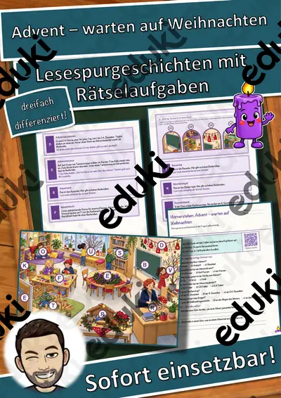
Lesespur: Advent: warten auf Weihnachten – Lesespurgeschichte mit Rätseln (Klasse 2)

Lesespur: Akrobatik: Partnerfiguren und Menschenpyramiden – Lesespurgeschichte mit Rätseln (Klasse 6)

Lesespur: Algorithmen im Alltag: Schritt für Schritt zum Ziel – Lesespurgeschichte mit Rätseln (Klasse 5)

Lesespur: Ampelsteuerung: Zustände und Automaten – Lesespurgeschichte mit Rätseln (Klasse 7)

Lesespur: Anweisungen genau geben: Programmieren ohne Computer – Lesespurgeschichte mit Rätseln (Klasse 1)

Lesespur: Arbeit und Leistung: was macht Arbeit wertvoll? – Lesespurgeschichte mit Rätseln (Klasse 9)

Lesespur: Architektur der Gegenwart: nachhaltig bauen – Lesespurgeschichte mit Rätseln (Klasse 10)

Lesespur: Aschermittwoch und Fastenzeit: vom Fasching bis Ostern – Lesespurgeschichte mit Rätseln (Klasse 6)

Lesespur: Auf den Spuren der Alpen – Lesespurgeschichte mit Rätseln (Klasse 5)
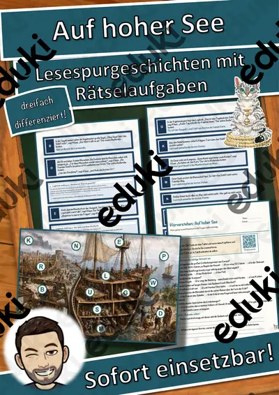
Lesespur: Auf hoher See – Lesespurgeschichte mit Rätseln (Klasse 5)
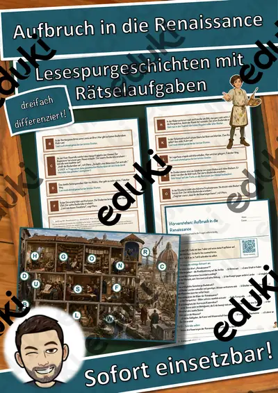
Lesespur: Aufbruch in die Renaissance – Lesespurgeschichte mit Rätseln (Klasse 7)
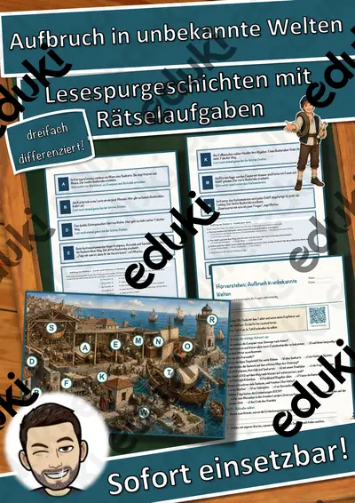
Lesespur: Aufbruch in unbekannte Welten – Lesespurgeschichte mit Rätseln (Klasse 7)

Lesespur: Aufwärmen: warum der Körper Anlauf braucht – Lesespurgeschichte mit Rätseln (Klasse 3)

Lesespur: Ausdauer: der lange Atem – Lesespurgeschichte mit Rätseln (Klasse 8)

Lesespur: Baking Christmas Cookies – Lesespurgeschichte mit Rätseln auf Englisch (Klasse 8)

Lesespur: Balladen: unheimliche Geschichten in Versen – Lesespurgeschichte mit Rätseln (Klasse 7)
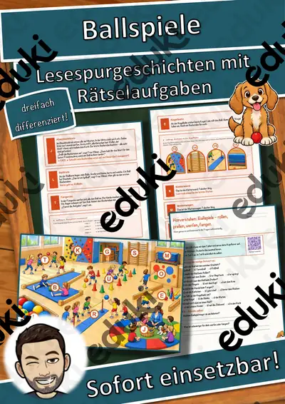
Lesespur: Ballspiele: rollen, prellen, werfen, fangen – Lesespurgeschichte mit Rätseln (Klasse 1)

Lesespur: Barbarazweige: der Brauch am 4. Dezember – Lesespurgeschichte mit Rätseln (Klasse 3)

Lesespur: Barcodes und QR-Codes: Informationen in Strichen und Punkten – Lesespurgeschichte mit Rätseln (Klasse 7)

Lesespur: Bedingungen und Schleifen: Wenn-dann und Wiederhole – Lesespurgeschichte mit Rätseln (Klasse 6)

Lesespur: Bewegungsbaustelle: bauen, klettern, rutschen, springen – Lesespurgeschichte mit Rätseln (Klasse 1)

Lesespur: Bewegungslandschaft: ein Hindernisparcours aus Alltagsdingen – Lesespurgeschichte mit Rätseln (Klasse 1)
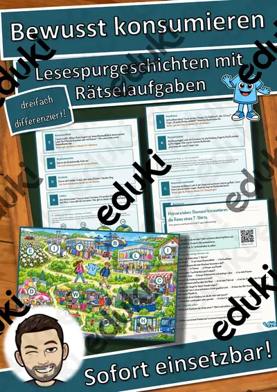
Lesespur: Bewusst konsumieren: die Reise eines T-Shirts – Lesespurgeschichte mit Rätseln (Klasse 8)

Lesespur: Bildsprache der Werbung: wie Bilder überzeugen – Lesespurgeschichte mit Rätseln (Klasse 10)

Lesespur: Binärzahlen: die Sprache der Computer aus 0 und 1 – Lesespurgeschichte mit Rätseln (Klasse 7)

Lesespur: Blues und Gospel: Stimmen der Hoffnung – Lesespurgeschichte mit Rätseln (Klasse 9)

Lesespur: Blätterdruck und Herbstfarben – Lesespurgeschichte mit Rätseln (Klasse 1)

Lesespur: Bodypercussion: Musik mit dem Körper – Lesespurgeschichte mit Rätseln (Klasse 1)

Lesespur: Bohren an der Ständerbohrmaschine: sicher und genau – Lesespurgeschichte mit Rätseln (Klasse 7)

Lesespur: Bonfire Night: ein Herbstfest in England – Lesespurgeschichte mit Rätseln (Klasse 7)

Lesespur: Breaking Through the Ice – Lesespurgeschichte mit Rätseln auf Englisch (Klasse 6)
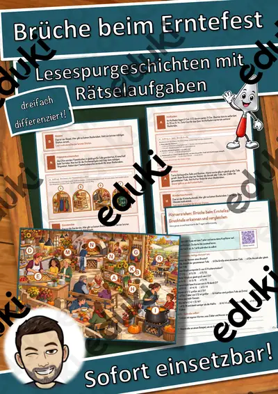
Lesespur: Brüche beim Erntefest: Bruchteile erkennen und vergleichen – Lesespurgeschichte mit Rätseln (Klasse 6)

Lesespur: Bärlauch: Frühlingskraut mit giftigen Doppelgängern – Lesespurgeschichte mit Rätseln (Klasse 6)

Lesespur: Chatbots und Sprachassistenten: wie Maschinen sprechen – Lesespurgeschichte mit Rätseln (Klasse 7)

Lesespur: Christmas Tree Farm – Lesespurgeschichte mit Rätseln auf Englisch (Klasse 6)
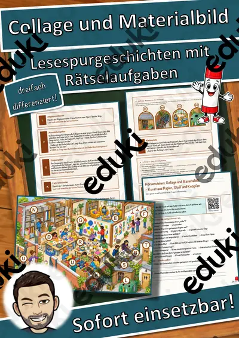
Lesespur: Collage und Materialbild: Kunst aus Papier, Stoff und Knöpfen – Lesespurgeschichte mit Rätseln (Klasse 5)

Lesespur: Comic und Bildgeschichte: Erzählen in Bildern – Lesespurgeschichte mit Rätseln (Klasse 6)
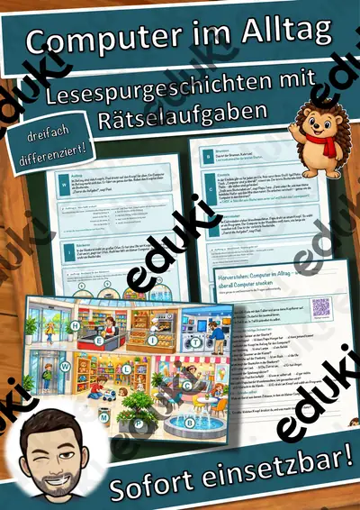
Lesespur: Computer im Alltag: wo überall Computer stecken – Lesespurgeschichte mit Rätseln (Klasse 1)

Lesespur: Das Akkordeon – Lesespurgeschichte mit Rätseln (Klasse 8)
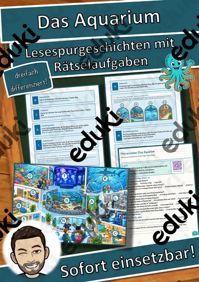
Lesespur: Das Aquarium – Lesespurgeschichte mit Rätseln (Klasse 4)

Lesespur: Das Atom – Lesespurgeschichte mit Rätseln (Klasse 8)
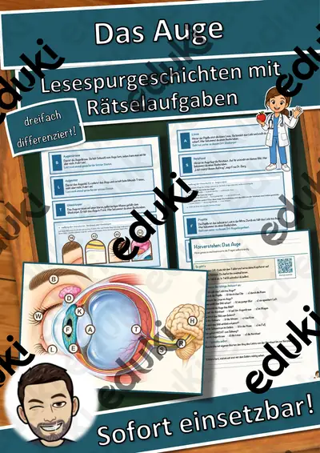
Lesespur: Das Auge – Lesespurgeschichte mit Rätseln (Klasse 7)

Lesespur: Das Automobil – Lesespurgeschichte mit Rätseln (Klasse 8)

Lesespur: Das Bauhaus: Design für alle – Lesespurgeschichte mit Rätseln (Klasse 10)

Lesespur: Das Bergwerk: Ein Abenteuer unter Tage – Lesespurgeschichte mit Rätseln (Klasse 5)

Lesespur: Das Betonwerk – Lesespurgeschichte mit Rätseln (Klasse 9)
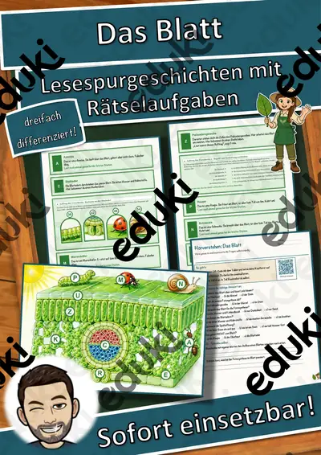
Lesespur: Das Blatt – Lesespurgeschichte mit Rätseln (Klasse 6)

Lesespur: Das Bodenprofil – Lesespurgeschichte mit Rätseln (Klasse 8)

Lesespur: Das Brot: Vom Korn zum Brot – Lesespurgeschichte mit Rätseln (Klasse 5)

Lesespur: Das Cajón – Lesespurgeschichte mit Rätseln (Klasse 8)

Lesespur: Das Chamäleon – Lesespurgeschichte mit Rätseln (Klasse 8)

Lesespur: Das Containerschiff – Lesespurgeschichte mit Rätseln (Klasse 8)

Lesespur: Das Delta – Lesespurgeschichte mit Rätseln (Klasse 8)

Lesespur: Das Deutsche Kaiserreich – Lesespurgeschichte mit Rätseln (Klasse 8)

Lesespur: Das Drachenfest – Lesespurgeschichte mit Rätseln (Klasse 3)

Lesespur: Das Düngemittelwerk – Lesespurgeschichte mit Rätseln (Klasse 9)

Lesespur: Das Echolot – Lesespurgeschichte mit Rätseln (Klasse 8)
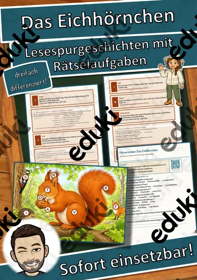
Lesespur: Das Eichhörnchen – Lesespurgeschichte mit Rätseln (Klasse 5)

Lesespur: Das Eis am Dach – Lesespurgeschichte mit Rätseln (Klasse 3)

Lesespur: Das Elektroauto – Lesespurgeschichte mit Rätseln (Klasse 9)

Lesespur: Das Erdbeben – Lesespurgeschichte mit Rätseln (Klasse 9)

Lesespur: Das Fahrrad – Lesespurgeschichte mit Rätseln (Klasse 4)

Lesespur: Das Feuerzeug – Lesespurgeschichte mit Rätseln (Klasse 8)

Lesespur: Das Flugzeug – Lesespurgeschichte mit Rätseln (Klasse 8)

Lesespur: Das Frühlingsfest: Neujahr in China – Lesespurgeschichte mit Rätseln (Klasse 5)
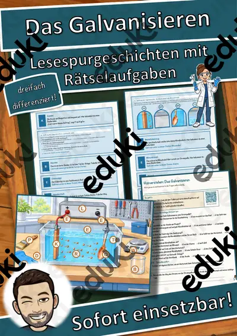
Lesespur: Das Galvanisieren – Lesespurgeschichte mit Rätseln (Klasse 9)

Lesespur: Das Geheimnis der Pyramide (Ägypten) – Lesespurgeschichte mit Rätseln (Klasse 5)

Lesespur: Das Geheimnis der Ritterburg – Lesespurgeschichte mit Rätseln (Klasse 6)

Lesespur: Das Geheimnis der Römerstadt – Lesespurgeschichte mit Rätseln (Klasse 6)

Lesespur: Das Geheimnis der fünf Sinne – Lesespurgeschichte mit Rätseln (Klasse 5)
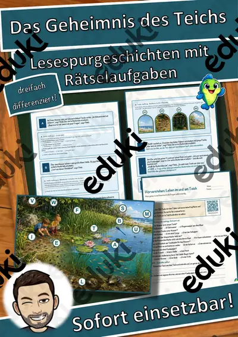
Lesespur: Das Geheimnis des Teichs – Lesespurgeschichte mit Rätseln (Klasse 5)

Lesespur: Das Geheimnis des Waldes (Lebensraum Wald) – Lesespurgeschichte mit Rätseln (Klasse 5)
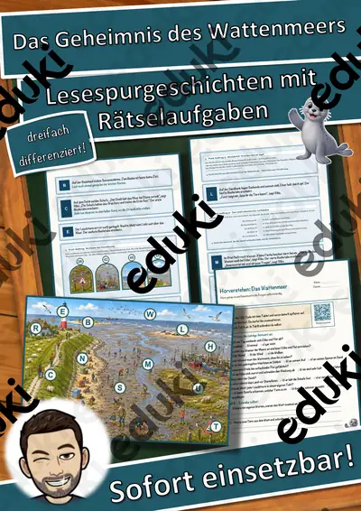
Lesespur: Das Geheimnis des Wattenmeers – Lesespurgeschichte mit Rätseln (Klasse 5)

Lesespur: Das Gehirn – Lesespurgeschichte mit Rätseln (Klasse 9)

Lesespur: Das Gericht – Lesespurgeschichte mit Rätseln (Klasse 9)

Lesespur: Das Gewissen und die innere Stimme – Lesespurgeschichte mit Rätseln (Klasse 10)

Lesespur: Das Gewitter – Lesespurgeschichte mit Rätseln (Klasse 6)

Lesespur: Das Gewächshaus – Lesespurgeschichte mit Rätseln (Klasse 8)

Lesespur: Das Gezeitenkraftwerk – Lesespurgeschichte mit Rätseln (Klasse 9)
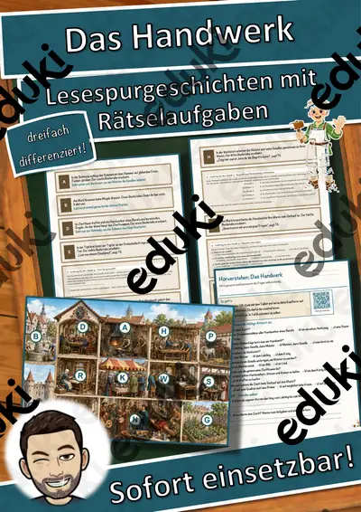
Lesespur: Das Handwerk und die Zünfte – Lesespurgeschichte mit Rätseln (Klasse 7)

Lesespur: Das Haus der Grundrechte – Lesespurgeschichte mit Rätseln (Klasse 9)
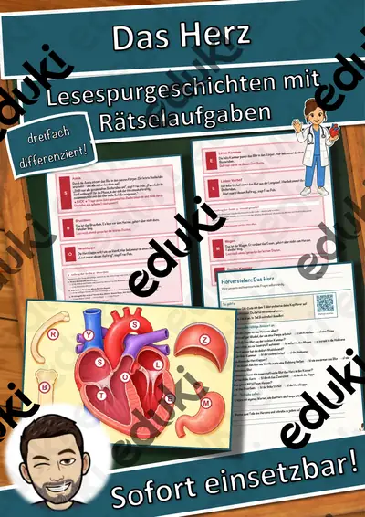
Lesespur: Das Herz – Lesespurgeschichte mit Rätseln (Klasse 8)
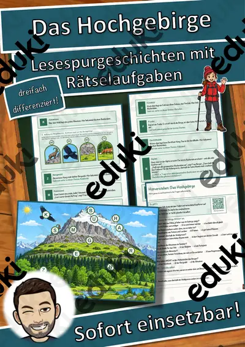
Lesespur: Das Hochgebirge – Lesespurgeschichte mit Rätseln (Klasse 8)
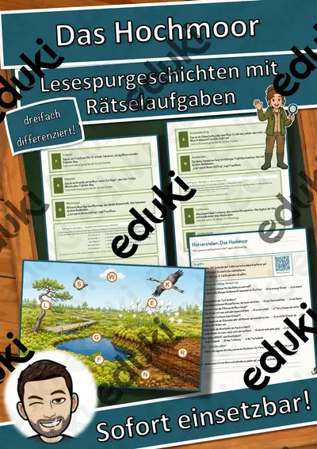
Lesespur: Das Hochmoor – Lesespurgeschichte mit Rätseln (Klasse 8)

Lesespur: Das Hormonsystem – Lesespurgeschichte mit Rätseln (Klasse 9)

Lesespur: Das Iglu – Lesespurgeschichte mit Rätseln (Klasse 3)
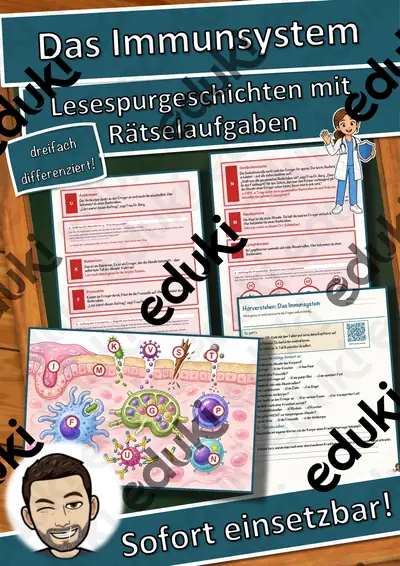
Lesespur: Das Immunsystem – Lesespurgeschichte mit Rätseln (Klasse 8)

Lesespur: Das Jugendschutzgesetz: Ausgehzeiten, Alkohol, Altersfreigaben – Lesespurgeschichte mit Rätseln (Klasse 8)

Lesespur: Das Kernkraftwerk – Lesespurgeschichte mit Rätseln (Klasse 9)

Lesespur: Das Klavier – Lesespurgeschichte mit Rätseln (Klasse 8)

Lesespur: Das Kloster im Mittelalter – Lesespurgeschichte mit Rätseln (Klasse 6)

Lesespur: Das Kniegelenk – Lesespurgeschichte mit Rätseln (Klasse 8)
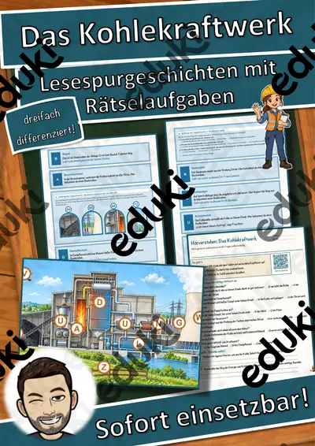
Lesespur: Das Kohlekraftwerk – Lesespurgeschichte mit Rätseln (Klasse 9)
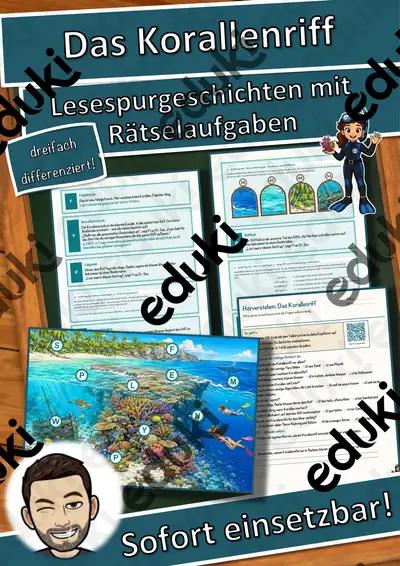
Lesespur: Das Korallenriff – Lesespurgeschichte mit Rätseln (Klasse 8)

Lesespur: Das Krankenhaus – Lesespurgeschichte mit Rätseln (Klasse 2)

Lesespur: Das Krokodil – Lesespurgeschichte mit Rätseln (Klasse 8)

Lesespur: Das Labor – Lesespurgeschichte mit Rätseln (Klasse 8)
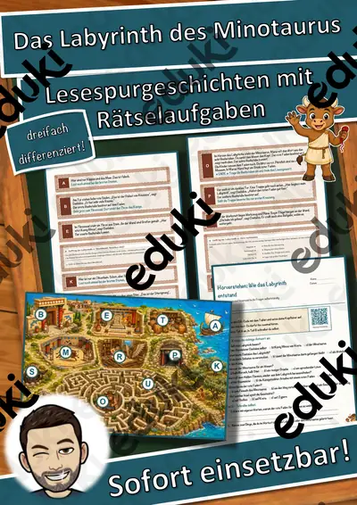
Lesespur: Das Labyrinth des Minotaurus – Lesespurgeschichte mit Rätseln (Klasse 6)

Lesespur: Das Laternenfest – Lesespurgeschichte mit Rätseln (Klasse 3)

Lesespur: Das Lebkuchenhaus: Quader, Netz und Oberfläche – Lesespurgeschichte mit Rätseln (Klasse 7)

Lesespur: Das Licht und die Farben – Lesespurgeschichte mit Rätseln (Klasse 7)

Lesespur: Das Luftlabor – Lesespurgeschichte mit Rätseln (Klasse 5)

Lesespur: Das Luftschiff – Lesespurgeschichte mit Rätseln (Klasse 8)

Lesespur: Das Lymphsystem – Lesespurgeschichte mit Rätseln (Klasse 9)

Lesespur: Das Martinsfeuer: was ein Feuer braucht und wie man es löscht – Lesespurgeschichte mit Rätseln (Klasse 8)
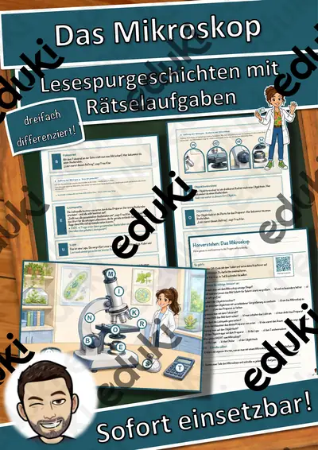
Lesespur: Das Mikroskop – Lesespurgeschichte mit Rätseln (Klasse 8)

Lesespur: Das Mitochondrium – Lesespurgeschichte mit Rätseln (Klasse 9)
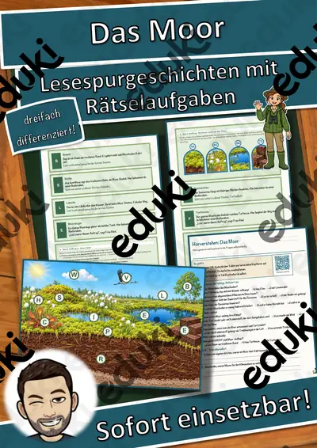
Lesespur: Das Moor – Lesespurgeschichte mit Rätseln (Klasse 8)

Lesespur: Das Musical: Singen, Spielen, Tanzen – Lesespurgeschichte mit Rätseln (Klasse 8)
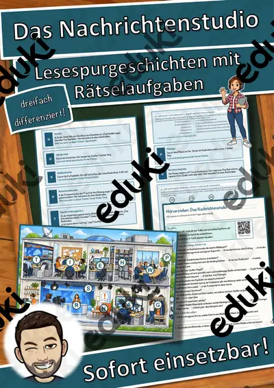
Lesespur: Das Nachrichtenstudio – Lesespurgeschichte mit Rätseln (Klasse 9)

Lesespur: Das Naturkundemuseum – Lesespurgeschichte mit Rätseln (Klasse 5)

Lesespur: Das Nervensystem – Lesespurgeschichte mit Rätseln (Klasse 9)

Lesespur: Das Ohr – Lesespurgeschichte mit Rätseln (Klasse 7)

Lesespur: Das Papier: Vom Baum zum Papier – Lesespurgeschichte mit Rätseln (Klasse 5)

Lesespur: Das Pausenfrühstück: fit in den Schultag – Lesespurgeschichte mit Rätseln (Klasse 1)
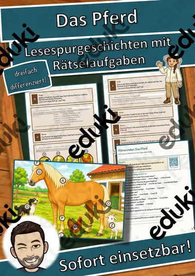
Lesespur: Das Pferd – Lesespurgeschichte mit Rätseln (Klasse 5)

Lesespur: Das Planetarium – Lesespurgeschichte mit Rätseln (Klasse 5)

Lesespur: Das Porträt: Gesichter zeichnen und verstehen – Lesespurgeschichte mit Rätseln (Klasse 7)

Lesespur: Das Pumpspeicherkraftwerk – Lesespurgeschichte mit Rätseln (Klasse 8)

Lesespur: Das Rathaus – Lesespurgeschichte mit Rätseln (Klasse 8)

Lesespur: Das Reh – Lesespurgeschichte mit Rätseln (Klasse 8)

Lesespur: Das Reich Karls des Großen – Lesespurgeschichte mit Rätseln (Klasse 6)

Lesespur: Das Riesenrad – Lesespurgeschichte mit Rätseln (Klasse 9)

Lesespur: Das Rondo und musikalische Formen: wie Musik gebaut ist – Lesespurgeschichte mit Rätseln (Klasse 6)
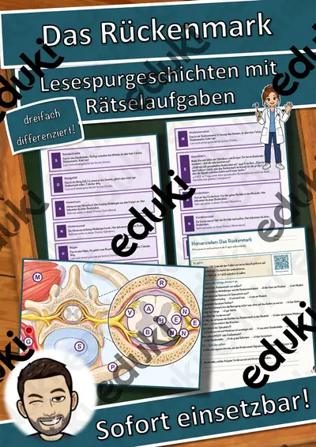
Lesespur: Das Rückenmark – Lesespurgeschichte mit Rätseln (Klasse 9)

Lesespur: Das Salz – Lesespurgeschichte mit Rätseln (Klasse 8)

Lesespur: Das Schaf – Lesespurgeschichte mit Rätseln (Klasse 5)

Lesespur: Das Schattentheater – Lesespurgeschichte mit Rätseln (Klasse 5)

Lesespur: Das Schiffshebewerk – Lesespurgeschichte mit Rätseln (Klasse 8)
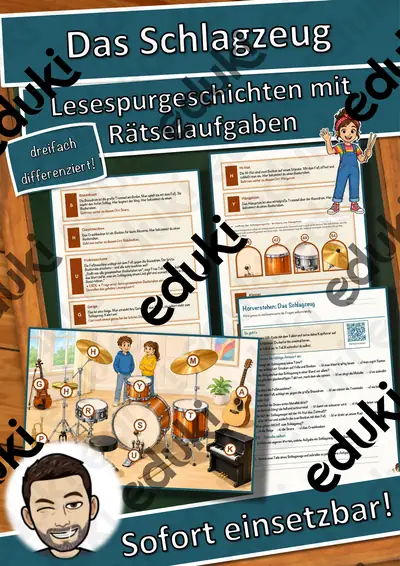
Lesespur: Das Schlagzeug – Lesespurgeschichte mit Rätseln (Klasse 8)

Lesespur: Das Schneelabor – Lesespurgeschichte mit Rätseln (Klasse 3)

Lesespur: Das Schulfest – Lesespurgeschichte mit Rätseln (Klasse 6)

Lesespur: Das Schwimmbad – Lesespurgeschichte mit Rätseln (Klasse 3)

Lesespur: Das Segelboot – Lesespurgeschichte mit Rätseln (Klasse 4)

Lesespur: Das Segelschiff – Lesespurgeschichte mit Rätseln (Klasse 8)

Lesespur: Das Sinfonieorchester – Lesespurgeschichte mit Rätseln (Klasse 8)

Lesespur: Das Skelett – Lesespurgeschichte mit Rätseln (Klasse 7)

Lesespur: Das Skigebiet – Lesespurgeschichte mit Rätseln (Klasse 2)

Lesespur: Das Spiegelkabinett – Lesespurgeschichte mit Rätseln (Klasse 5)

Lesespur: Das Sportabzeichen: Leistungen messen und vergleichen – Lesespurgeschichte mit Rätseln (Klasse 7)

Lesespur: Das Stadion – Lesespurgeschichte mit Rätseln (Klasse 2)

Lesespur: Das Stahlwerk – Lesespurgeschichte mit Rätseln (Klasse 9)

Lesespur: Das Stillleben: Dinge ins Bild setzen – Lesespurgeschichte mit Rätseln (Klasse 6)

Lesespur: Das Streichholz – Lesespurgeschichte mit Rätseln (Klasse 8)

Lesespur: Das Stromnetz – Lesespurgeschichte mit Rätseln (Klasse 9)

Lesespur: Das Sägewerk – Lesespurgeschichte mit Rätseln (Klasse 4)
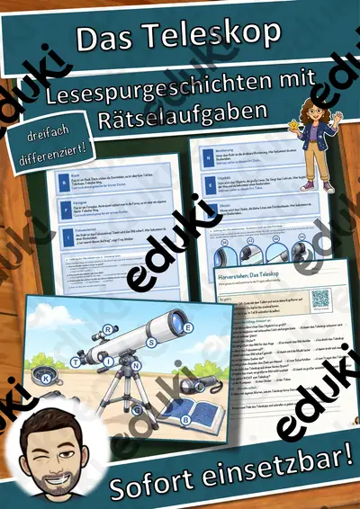
Lesespur: Das Teleskop – Lesespurgeschichte mit Rätseln (Klasse 8)

Lesespur: Das Thermometer – Lesespurgeschichte mit Rätseln (Klasse 8)

Lesespur: Das Tiefdruckgebiet – Lesespurgeschichte mit Rätseln (Klasse 8)

Lesespur: Das Tonstudio – Lesespurgeschichte mit Rätseln (Klasse 9)

Lesespur: Das Trinkwasser – Lesespurgeschichte mit Rätseln (Klasse 6)

Lesespur: Das U-Boot – Lesespurgeschichte mit Rätseln (Klasse 8)

Lesespur: Das Vibraphon – Lesespurgeschichte mit Rätseln (Klasse 8)

Lesespur: Das Vogelei – Lesespurgeschichte mit Rätseln (Klasse 8)

Lesespur: Das Vogelfutterhaus – Lesespurgeschichte mit Rätseln (Klasse 5)
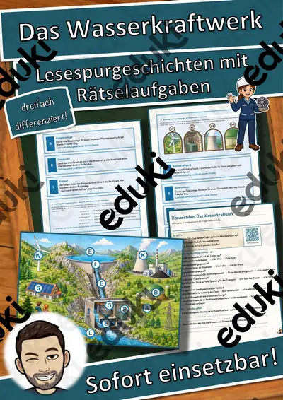
Lesespur: Das Wasserkraftwerk – Lesespurgeschichte mit Rätseln (Klasse 8)

Lesespur: Das Wasserlabor – Lesespurgeschichte mit Rätseln (Klasse 5)

Lesespur: Das Wasserwerk – Lesespurgeschichte mit Rätseln (Klasse 8)

Lesespur: Das Weihnachtsoratorium: Chor, Arie und Rezitativ – Lesespurgeschichte mit Rätseln (Klasse 7)
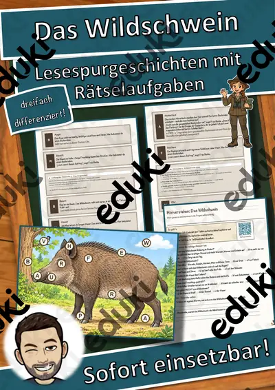
Lesespur: Das Wildschwein – Lesespurgeschichte mit Rätseln (Klasse 8)
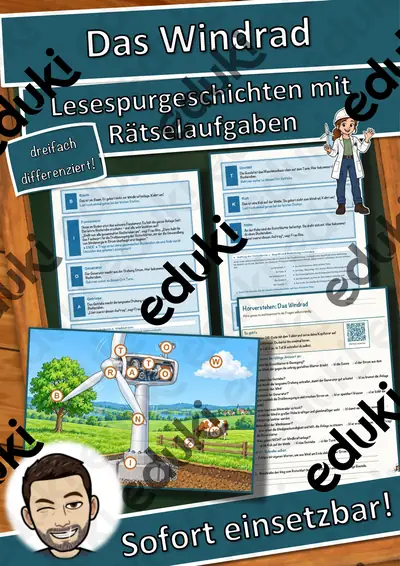
Lesespur: Das Windrad – Lesespurgeschichte mit Rätseln (Klasse 9)

Lesespur: Das Winter-Zielwerfen – Lesespurgeschichte mit Rätseln (Klasse 3)
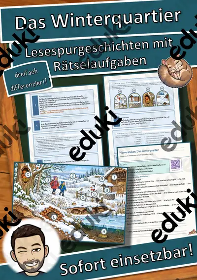
Lesespur: Das Winterquartier – Lesespurgeschichte mit Rätseln (Klasse 3)

Lesespur: Das Xylophon – Lesespurgeschichte mit Rätseln (Klasse 8)
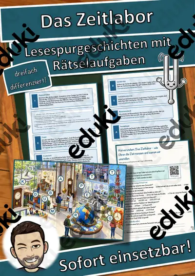
Lesespur: Das Zeitlabor: wie Uhren die Zeit messen und warum wir umstellen – Lesespurgeschichte mit Rätseln (Klasse 8)
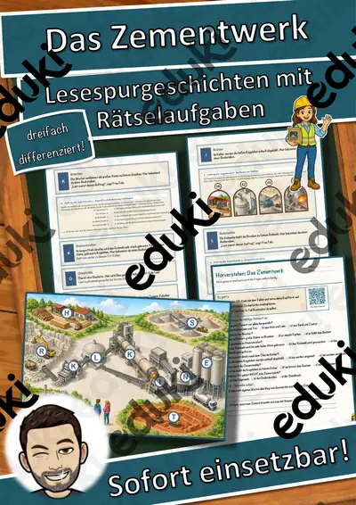
Lesespur: Das Zementwerk – Lesespurgeschichte mit Rätseln (Klasse 9)
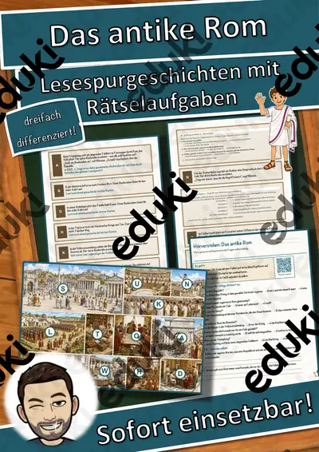
Lesespur: Das antike Rom: die Republik – Lesespurgeschichte mit Rätseln (Klasse 7)

Lesespur: Das neue Smartphone: sicher einrichten – Lesespurgeschichte mit Rätseln (Klasse 7)
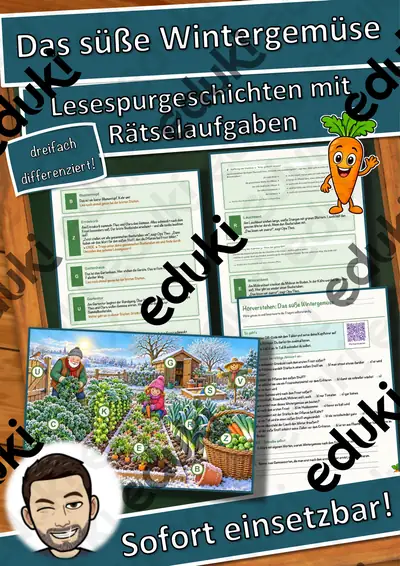
Lesespur: Das süße Wintergemüse – Lesespurgeschichte mit Rätseln (Klasse 3)

Lesespur: Das weiße Gold – Lesespurgeschichte mit Rätseln (Klasse 6)
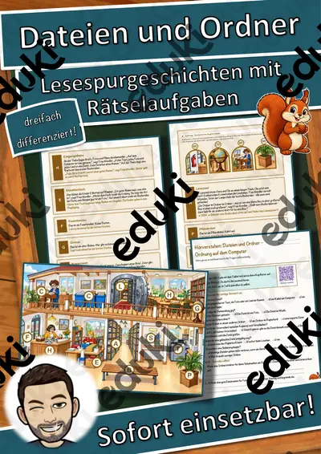
Lesespur: Dateien und Ordner: Ordnung auf dem Computer – Lesespurgeschichte mit Rätseln (Klasse 5)

Lesespur: Datenbanken: Ordnung im Fundbüro – Lesespurgeschichte mit Rätseln (Klasse 10)
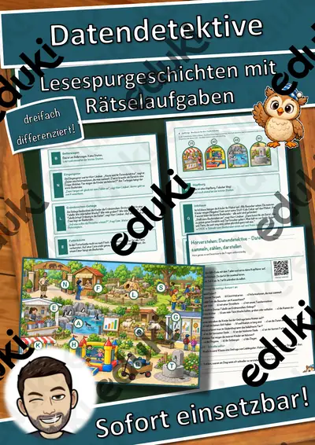
Lesespur: Datendetektive: Daten sammeln, zählen, darstellen – Lesespurgeschichte mit Rätseln (Klasse 3)
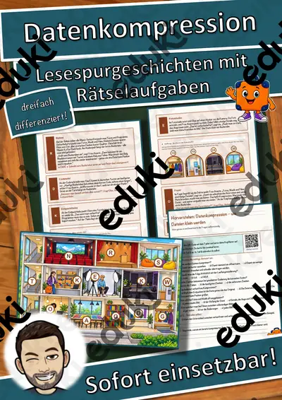
Lesespur: Datenkompression: wie Dateien klein werden – Lesespurgeschichte mit Rätseln (Klasse 10)

Lesespur: Deepfakes: gefälschte Bilder und Videos erkennen – Lesespurgeschichte mit Rätseln (Klasse 10)

Lesespur: Den Tisch festlich decken: Gedeck, Tischsitten und Tischschmuck – Lesespurgeschichte mit Rätseln (Klasse 6)

Lesespur: Der 3D-Druck: In der Technik-Werkstatt – Lesespurgeschichte mit Rätseln (Klasse 9)

Lesespur: Der Adler – Lesespurgeschichte mit Rätseln (Klasse 8)
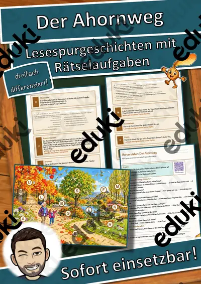
Lesespur: Der Ahornweg – Lesespurgeschichte mit Rätseln (Klasse 3)

Lesespur: Der Airbag – Lesespurgeschichte mit Rätseln (Klasse 9)
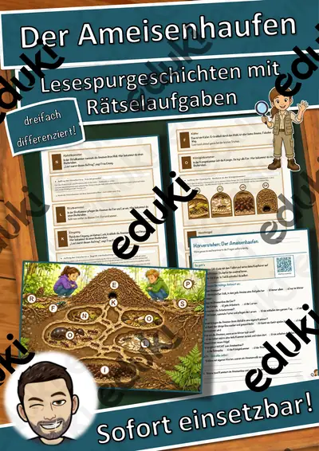
Lesespur: Der Ameisenhaufen – Lesespurgeschichte mit Rätseln (Klasse 8)
Lesespur: Der Apfelbaum – Lesespurgeschichte mit Rätseln (Klasse 8)

Lesespur: Der Apfelkeller – Lesespurgeschichte mit Rätseln (Klasse 3)
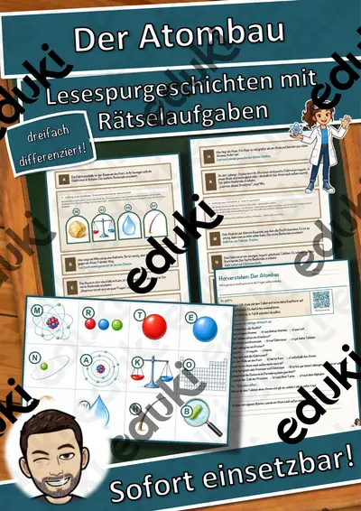
Lesespur: Der Atombau – Lesespurgeschichte mit Rätseln (Klasse 8)

Lesespur: Der Aufzug – Lesespurgeschichte mit Rätseln (Klasse 8)
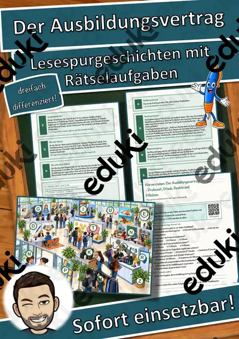
Lesespur: Der Ausbildungsvertrag: Probezeit, Urlaub, Rechte und Pflichten – Lesespurgeschichte mit Rätseln (Klasse 9)
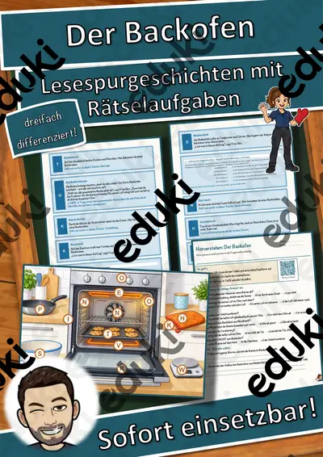
Lesespur: Der Backofen – Lesespurgeschichte mit Rätseln (Klasse 8)

Lesespur: Der Bagger – Lesespurgeschichte mit Rätseln (Klasse 8)

Lesespur: Der Bahnhof: Eine Reise mit der Bahn – Lesespurgeschichte mit Rätseln (Klasse 5)
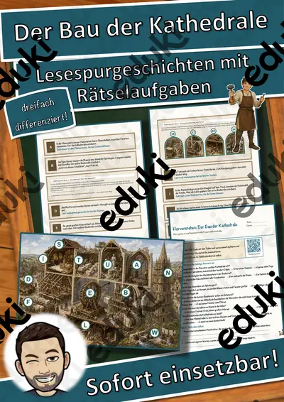
Lesespur: Der Bau der Kathedrale – Lesespurgeschichte mit Rätseln (Klasse 7)
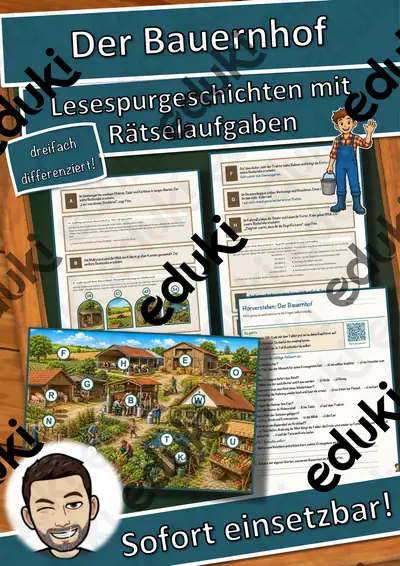
Lesespur: Der Bauernhof – Lesespurgeschichte mit Rätseln (Klasse 7)

Lesespur: Der Baukran – Lesespurgeschichte mit Rätseln (Klasse 8)

Lesespur: Der Baum – Lesespurgeschichte mit Rätseln (Klasse 6)

Lesespur: Der Baumstamm – Lesespurgeschichte mit Rätseln (Klasse 8)

Lesespur: Der Bergsee – Lesespurgeschichte mit Rätseln (Klasse 8)

Lesespur: Der Biber – Lesespurgeschichte mit Rätseln (Klasse 8)
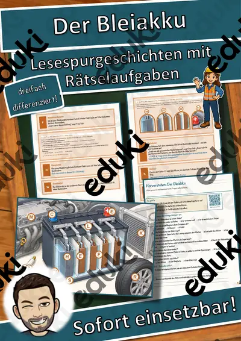
Lesespur: Der Bleiakku – Lesespurgeschichte mit Rätseln (Klasse 9)
Lesespur: Der Blitzableiter – Lesespurgeschichte mit Rätseln (Klasse 9)

Lesespur: Der Blutkreislauf – Lesespurgeschichte mit Rätseln (Klasse 7)

Lesespur: Der Boden – Lesespurgeschichte mit Rätseln (Klasse 5)

Lesespur: Der Braunkohletagebau – Lesespurgeschichte mit Rätseln (Klasse 8)

Lesespur: Der Brunnen – Lesespurgeschichte mit Rätseln (Klasse 8)

Lesespur: Der Bundestag – Lesespurgeschichte mit Rätseln (Klasse 8)
Lesespur: Der Bunsenbrenner – Lesespurgeschichte mit Rätseln (Klasse 8)

Lesespur: Der Bär – Lesespurgeschichte mit Rätseln (Klasse 8)
Lesespur: Der Campingplatz – Lesespurgeschichte mit Rätseln (Klasse 4)
Lesespur: Der Canyon – Lesespurgeschichte mit Rätseln (Klasse 8)
Lesespur: Der Christbaumhof – Lesespurgeschichte mit Rätseln (Klasse 3)

Lesespur: Der Computer – Lesespurgeschichte mit Rätseln (Klasse 7)

Lesespur: Der Dachs – Lesespurgeschichte mit Rätseln (Klasse 8)

Lesespur: Der Deich – Lesespurgeschichte mit Rätseln (Klasse 8)
Lesespur: Der Delfin – Lesespurgeschichte mit Rätseln (Klasse 8)

Lesespur: Der Dickdarm – Lesespurgeschichte mit Rätseln (Klasse 8)

Lesespur: Der Dudelsack – Lesespurgeschichte mit Rätseln (Klasse 8)

Lesespur: Der Dynamo – Lesespurgeschichte mit Rätseln (Klasse 9)

Lesespur: Der Dünndarm – Lesespurgeschichte mit Rätseln (Klasse 8)
Lesespur: Der Eisberg – Lesespurgeschichte mit Rätseln (Klasse 8)
Lesespur: Der Eisbrecher – Lesespurgeschichte mit Rätseln (Klasse 3)

Lesespur: Der Eisstock – Lesespurgeschichte mit Rätseln (Klasse 3)

Lesespur: Der Elektromotor – Lesespurgeschichte mit Rätseln (Klasse 8)

Lesespur: Der Equal Pay Day: warum Frauen weniger verdienen – Lesespurgeschichte mit Rätseln (Klasse 9)

Lesespur: Der Erste Weltkrieg: vom Kriegsbeginn zum Waffenstillstand – Lesespurgeschichte mit Rätseln (Klasse 9)

Lesespur: Der Fahrraddynamo – Lesespurgeschichte mit Rätseln (Klasse 8)

Lesespur: Der Fallschirm – Lesespurgeschichte mit Rätseln (Klasse 8)

Lesespur: Der Farbkreis – Lesespurgeschichte mit Rätseln (Klasse 5)

Lesespur: Der Feuerlöscher – Lesespurgeschichte mit Rätseln (Klasse 8)

Lesespur: Der Feuersalamander – Lesespurgeschichte mit Rätseln (Klasse 8)

Lesespur: Der Fisch – Lesespurgeschichte mit Rätseln (Klasse 5)

Lesespur: Der Fjord – Lesespurgeschichte mit Rätseln (Klasse 8)

Lesespur: Der Fliegenpilz – Lesespurgeschichte mit Rätseln (Klasse 8)

Lesespur: Der Flohmarkt – Lesespurgeschichte mit Rätseln (Klasse 7)
Lesespur: Der Flughafen – Lesespurgeschichte mit Rätseln (Klasse 8)
Lesespur: Der Fluss – Lesespurgeschichte mit Rätseln (Klasse 8)

Lesespur: Der Fotoapparat – Lesespurgeschichte mit Rätseln (Klasse 8)

Lesespur: Der Frosch – Lesespurgeschichte mit Rätseln (Klasse 5)

Lesespur: Der Fuchs – Lesespurgeschichte mit Rätseln (Klasse 8)

Lesespur: Der Gasbrenner – Lesespurgeschichte mit Rätseln (Klasse 8)
Lesespur: Der Generator – Lesespurgeschichte mit Rätseln (Klasse 9)

Lesespur: Der Geysir – Lesespurgeschichte mit Rätseln (Klasse 8)

Lesespur: Der Gletscher – Lesespurgeschichte mit Rätseln (Klasse 8)

Lesespur: Der Haartrockner – Lesespurgeschichte mit Rätseln (Klasse 8)

Lesespur: Der Hackathon: im Team eine digitale Idee entwickeln – Lesespurgeschichte mit Rätseln (Klasse 10)

Lesespur: Der Hafen – Lesespurgeschichte mit Rätseln (Klasse 8)
Lesespur: Der Hai – Lesespurgeschichte mit Rätseln (Klasse 8)

Lesespur: Der Hamster – Lesespurgeschichte mit Rätseln (Klasse 8)

Lesespur: Der Hase – Lesespurgeschichte mit Rätseln (Klasse 8)

Lesespur: Der Heißluftballon – Lesespurgeschichte mit Rätseln (Klasse 8)
Lesespur: Der Herbstwald – Lesespurgeschichte mit Rätseln (Klasse 3)

Lesespur: Der Hirsch – Lesespurgeschichte mit Rätseln (Klasse 8)

Lesespur: Der Hirschkäfer – Lesespurgeschichte mit Rätseln (Klasse 8)

Lesespur: Der Hochofen – Lesespurgeschichte mit Rätseln (Klasse 9)

Lesespur: Der Hubschrauber – Lesespurgeschichte mit Rätseln (Klasse 8)

Lesespur: Der Hummer – Lesespurgeschichte mit Rätseln (Klasse 8)

Lesespur: Der Hund: ein treues Haustier – Lesespurgeschichte mit Rätseln (Klasse 5)

Lesespur: Der Hund: unser treues Haustier – Lesespurgeschichte mit Rätseln (Klasse 5)

Lesespur: Der Hungerwinter 1947: Leben nach dem Krieg – Lesespurgeschichte mit Rätseln (Klasse 9)
Lesespur: Der Hurrikan – Lesespurgeschichte mit Rätseln (Klasse 9)
Lesespur: Der Igel – Lesespurgeschichte mit Rätseln (Klasse 6)
Lesespur: Der Jahresrückblick: eine Radiosendung entsteht – Lesespurgeschichte mit Rätseln (Klasse 7)

Lesespur: Der Jugendrat entscheidet – Lesespurgeschichte mit Rätseln (Klasse 6)

Lesespur: Der Kaktus – Lesespurgeschichte mit Rätseln (Klasse 8)

Lesespur: Der Kalender: wie Caesar und Gregor das Jahr ordneten – Lesespurgeschichte mit Rätseln (Klasse 7)

Lesespur: Der Kalkkreislauf – Lesespurgeschichte mit Rätseln (Klasse 9)

Lesespur: Der Kaminofen: Verbrennung und Kohlenmonoxid – Lesespurgeschichte mit Rätseln (Klasse 8)

Lesespur: Der Kanon: eine Melodie, viele Stimmen – Lesespurgeschichte mit Rätseln (Klasse 3)

Lesespur: Der Kartoffelhof – Lesespurgeschichte mit Rätseln (Klasse 3)
Lesespur: Der Katalysator – Lesespurgeschichte mit Rätseln (Klasse 9)

Lesespur: Der Kehlkopf – Lesespurgeschichte mit Rätseln (Klasse 8)

Lesespur: Der Klimawandel – Lesespurgeschichte mit Rätseln (Klasse 8)

Lesespur: Der Knochen – Lesespurgeschichte mit Rätseln (Klasse 8)
Lesespur: Der Kohlenstoffkreislauf – Lesespurgeschichte mit Rätseln (Klasse 9)

Lesespur: Der Kompass – Lesespurgeschichte mit Rätseln (Klasse 8)

Lesespur: Der Kompost – Lesespurgeschichte mit Rätseln (Klasse 8)

Lesespur: Der Komposthaufen – Lesespurgeschichte mit Rätseln (Klasse 8)

Lesespur: Der Konzertsaal – Lesespurgeschichte mit Rätseln (Klasse 8)

Lesespur: Der Kran – Lesespurgeschichte mit Rätseln (Klasse 8)
Lesespur: Der Kranich – Lesespurgeschichte mit Rätseln (Klasse 8)

Lesespur: Der Kühlschrank – Lesespurgeschichte mit Rätseln (Klasse 8)

Lesespur: Der Kürbis – Lesespurgeschichte mit Rätseln (Klasse 3)

Lesespur: Der Kürbishof – Lesespurgeschichte mit Rätseln (Klasse 3)

Lesespur: Der Lachs – Lesespurgeschichte mit Rätseln (Klasse 8)

Lesespur: Der Landtag – Lesespurgeschichte mit Rätseln (Klasse 9)

Lesespur: Der Laser – Lesespurgeschichte mit Rätseln (Klasse 9)

Lesespur: Der Lautsprecher – Lesespurgeschichte mit Rätseln (Klasse 9)

Lesespur: Der Leserbrief: meine Meinung in der Zeitung – Lesespurgeschichte mit Rätseln (Klasse 8)
Lesespur: Der Leuchtturm – Lesespurgeschichte mit Rätseln (Klasse 8)

Lesespur: Der Luchs – Lesespurgeschichte mit Rätseln (Klasse 8)

Lesespur: Der Löwenzahn – Lesespurgeschichte mit Rätseln (Klasse 8)

Lesespur: Der Magen – Lesespurgeschichte mit Rätseln (Klasse 8)

Lesespur: Der Magnetismus – Lesespurgeschichte mit Rätseln (Klasse 7)

Lesespur: Der Mais – Lesespurgeschichte mit Rätseln (Klasse 8)

Lesespur: Der Malerbetrieb: Ein Praktikum beim Maler – Lesespurgeschichte mit Rätseln (Klasse 9)
Lesespur: Der Mann aus dem Eis: ein Gletscherfund aus der Jungsteinzeit – Lesespurgeschichte mit Rätseln (Klasse 6)

Lesespur: Der Marienkäfer – Lesespurgeschichte mit Rätseln (Klasse 4)

Lesespur: Der Mauerfall: vom geteilten Land zur Einheit – Lesespurgeschichte mit Rätseln (Klasse 10)

Lesespur: Der Maulwurf – Lesespurgeschichte mit Rätseln (Klasse 5)

Lesespur: Der Meeresboden – Lesespurgeschichte mit Rätseln (Klasse 8)

Lesespur: Der Mietvertrag: die erste eigene Wohnung – Lesespurgeschichte mit Rätseln (Klasse 9)

Lesespur: Der Mischwald – Lesespurgeschichte mit Rätseln (Klasse 7)

Lesespur: Der Mond – Lesespurgeschichte mit Rätseln (Klasse 7)

Lesespur: Der Muskel – Lesespurgeschichte mit Rätseln (Klasse 8)

Lesespur: Der Mäander – Lesespurgeschichte mit Rätseln (Klasse 8)

Lesespur: Der Mähdrescher – Lesespurgeschichte mit Rätseln (Klasse 8)
Lesespur: Der Nachthimmel: Eine Reise zu den Sternen – Lesespurgeschichte mit Rätseln (Klasse 5)

Lesespur: Der Nationalpark – Lesespurgeschichte mit Rätseln (Klasse 5)

Lesespur: Der Nebel – Lesespurgeschichte mit Rätseln (Klasse 8)

Lesespur: Der Nistkasten: ein Zuhause für Meisen bauen – Lesespurgeschichte mit Rätseln (Klasse 5)

Lesespur: Der Nordpol – Lesespurgeschichte mit Rätseln (Klasse 4)

Lesespur: Der Obsthof – Lesespurgeschichte mit Rätseln (Klasse 4)

Lesespur: Der Permafrost – Lesespurgeschichte mit Rätseln (Klasse 9)

Lesespur: Der Pilz – Lesespurgeschichte mit Rätseln (Klasse 5)
Lesespur: Der Pinguin – Lesespurgeschichte mit Rätseln (Klasse 8)

Lesespur: Der Pirat: Ein Abenteuer auf hoher See – Lesespurgeschichte mit Rätseln (Klasse 5)

Lesespur: Der Plattenspieler – Lesespurgeschichte mit Rätseln (Klasse 8)

Lesespur: Der Rauchmelder – Lesespurgeschichte mit Rätseln (Klasse 8)
Lesespur: Der Regenbogen – Lesespurgeschichte mit Rätseln (Klasse 6)

Lesespur: Der Regenwurm – Lesespurgeschichte mit Rätseln (Klasse 8)

Lesespur: Der Reiterhof – Lesespurgeschichte mit Rätseln (Klasse 3)
Lesespur: Der Rost – Lesespurgeschichte mit Rätseln (Klasse 9)

Lesespur: Der Salzstock – Lesespurgeschichte mit Rätseln (Klasse 9)
Lesespur: Der Satellit – Lesespurgeschichte mit Rätseln (Klasse 8)

Lesespur: Der Saugroboter: Sensoren und Hindernisse – Lesespurgeschichte mit Rätseln (Klasse 3)

Lesespur: Der Schiedsrichter: Regeln und Entscheidungen – Lesespurgeschichte mit Rätseln (Klasse 6)

Lesespur: Der Schmetterling – Lesespurgeschichte mit Rätseln (Klasse 4)

Lesespur: Der Schnellkochtopf – Lesespurgeschichte mit Rätseln (Klasse 8)

Lesespur: Der Schulbus – Lesespurgeschichte mit Rätseln (Klasse 3)

Lesespur: Der Schulgarten – Lesespurgeschichte mit Rätseln (Klasse 3)
Lesespur: Der Schulserver – Lesespurgeschichte mit Rätseln (Klasse 8)

Lesespur: Der Schädel – Lesespurgeschichte mit Rätseln (Klasse 8)

Lesespur: Der Sonnenkönig – Lesespurgeschichte mit Rätseln (Klasse 7)
Lesespur: Der Specht – Lesespurgeschichte mit Rätseln (Klasse 5)

Lesespur: Der Spielplatz – Lesespurgeschichte mit Rätseln (Klasse 2)

Lesespur: Der Sportplatz – Lesespurgeschichte mit Rätseln (Klasse 6)

Lesespur: Der Sportverein: mitmachen, mithelfen, mitbestimmen – Lesespurgeschichte mit Rätseln (Klasse 8)

Lesespur: Der Staubsauger – Lesespurgeschichte mit Rätseln (Klasse 8)

Lesespur: Der Staudamm – Lesespurgeschichte mit Rätseln (Klasse 9)

Lesespur: Der Steinbruch – Lesespurgeschichte mit Rätseln (Klasse 8)

Lesespur: Der Storch – Lesespurgeschichte mit Rätseln (Klasse 8)
Lesespur: Der Strand: Ein Tag am Meer – Lesespurgeschichte mit Rätseln (Klasse 5)
Lesespur: Der Stromkreis – Lesespurgeschichte mit Rätseln (Klasse 7)
Lesespur: Der Supermarkt: Ein Praktikum im Einzelhandel – Lesespurgeschichte mit Rätseln (Klasse 10)

Lesespur: Der Tafelberg – Lesespurgeschichte mit Rätseln (Klasse 9)

Lesespur: Der Tag der Menschenrechte: Rechte für alle Menschen – Lesespurgeschichte mit Rätseln (Klasse 10)
Lesespur: Der Tag der Muttersprache: viele Sprachen in meiner Klasse – Lesespurgeschichte mit Rätseln (Klasse 5)

Lesespur: Der Tagebau – Lesespurgeschichte mit Rätseln (Klasse 9)

Lesespur: Der Tintenfisch – Lesespurgeschichte mit Rätseln (Klasse 8)

Lesespur: Der Toaster – Lesespurgeschichte mit Rätseln (Klasse 8)

Lesespur: Der Transformator – Lesespurgeschichte mit Rätseln (Klasse 9)

Lesespur: Der Treibhauseffekt – Lesespurgeschichte mit Rätseln (Klasse 9)

Lesespur: Der Tsunami – Lesespurgeschichte mit Rätseln (Klasse 8)

Lesespur: Der Tunnel – Lesespurgeschichte mit Rätseln (Klasse 8)

Lesespur: Der Turmdrehkran – Lesespurgeschichte mit Rätseln (Klasse 8)
Lesespur: Der Verbrennungsmotor – Lesespurgeschichte mit Rätseln (Klasse 9)
Lesespur: Der Viertaktmotor – Lesespurgeschichte mit Rätseln (Klasse 9)

Lesespur: Der Vogel – Lesespurgeschichte mit Rätseln (Klasse 7)

Lesespur: Der Vogelzug – Lesespurgeschichte mit Rätseln (Klasse 7)
Lesespur: Der Vorlesetag: gut vorlesen, gespannt zuhören – Lesespurgeschichte mit Rätseln (Klasse 6)

Lesespur: Der Vulkan – Lesespurgeschichte mit Rätseln (Klasse 7)

Lesespur: Der Waldboden – Lesespurgeschichte mit Rätseln (Klasse 3)

Lesespur: Der Wasserfall – Lesespurgeschichte mit Rätseln (Klasse 8)

Lesespur: Der Wasserkocher – Lesespurgeschichte mit Rätseln (Klasse 8)

Lesespur: Der Wasserkreislauf – Lesespurgeschichte mit Rätseln (Klasse 6)

Lesespur: Der Wasserturm – Lesespurgeschichte mit Rätseln (Klasse 8)

Lesespur: Der Weg des Sonnenstrahls (Sonne und Erde) – Lesespurgeschichte mit Rätseln (Klasse 5)

Lesespur: Der Weihnachtsbasar: planen, kalkulieren, verkaufen – Lesespurgeschichte mit Rätseln (Klasse 6)

Lesespur: Der Weihnachtsmarkt – Lesespurgeschichte mit Rätseln (Klasse 4)

Lesespur: Der Weihnachtsstern: eine Pflanze aus Mexiko – Lesespurgeschichte mit Rätseln (Klasse 5)
Lesespur: Der Weizen – Lesespurgeschichte mit Rätseln (Klasse 8)
Lesespur: Der Werkraum – Lesespurgeschichte mit Rätseln (Klasse 7)

Lesespur: Der Wertstoffhof – Lesespurgeschichte mit Rätseln (Klasse 3)

Lesespur: Der Wettlauf zum Südpol: eine Expedition ins ewige Eis – Lesespurgeschichte mit Rätseln (Klasse 7)

Lesespur: Der Winterdienst – Lesespurgeschichte mit Rätseln (Klasse 3)

Lesespur: Der Winterreifen – Lesespurgeschichte mit Rätseln (Klasse 8)

Lesespur: Der Winterschlaf – Lesespurgeschichte mit Rätseln (Klasse 7)

Lesespur: Der Wintersee – Lesespurgeschichte mit Rätseln (Klasse 3)

Lesespur: Der Wochenmarkt – Lesespurgeschichte mit Rätseln (Klasse 7)
Lesespur: Der Wolf – Lesespurgeschichte mit Rätseln (Klasse 8)

Lesespur: Der Zahn – Lesespurgeschichte mit Rätseln (Klasse 8)

Lesespur: Der Zellkern – Lesespurgeschichte mit Rätseln (Klasse 9)

Lesespur: Der Zirkus: Ein Tag in der Manege – Lesespurgeschichte mit Rätseln (Klasse 5)

Lesespur: Der Zoo: Ein Tag bei den Tieren – Lesespurgeschichte mit Rätseln (Klasse 5)

Lesespur: Der Zukunftstag – Lesespurgeschichte mit Rätseln (Klasse 8)

Lesespur: Der Zwiebelgarten – Lesespurgeschichte mit Rätseln (Klasse 3)

Lesespur: Der dunkle Schulweg – Lesespurgeschichte mit Rätseln (Klasse 3)

Lesespur: Der erste Ferienjob: Jugendarbeitsschutz, Minijob und Lohn – Lesespurgeschichte mit Rätseln (Klasse 9)

Lesespur: Der frostige Wintermorgen – Lesespurgeschichte mit Rätseln (Klasse 3)

Lesespur: Der kahle Winterbaum – Lesespurgeschichte mit Rätseln (Klasse 3)
Lesespur: Der kleine Bodenroboter: Befehle Schritt für Schritt – Lesespurgeschichte mit Rätseln (Klasse 1)

Lesespur: Der leise Winterwald – Lesespurgeschichte mit Rätseln (Klasse 3)

Lesespur: Der sichtbare Atem – Lesespurgeschichte mit Rätseln (Klasse 3)

Lesespur: Der tropische Regenwald – Lesespurgeschichte mit Rätseln (Klasse 7)
Lesespur: Die Achterbahn – Lesespurgeschichte mit Rätseln (Klasse 8)

Lesespur: Die Aluminiumhütte – Lesespurgeschichte mit Rätseln (Klasse 9)
Lesespur: Die Ameise – Lesespurgeschichte mit Rätseln (Klasse 8)

Lesespur: Die Amsel – Lesespurgeschichte mit Rätseln (Klasse 8)

Lesespur: Die Anfänge der Philosophie: eine Zeitreise ins antike Athen – Lesespurgeschichte mit Rätseln (Klasse 10)

Lesespur: Die Arztpraxis: Ein Praktikum beim Arzt – Lesespurgeschichte mit Rätseln (Klasse 9)

Lesespur: Die Atmosphäre – Lesespurgeschichte mit Rätseln (Klasse 8)

Lesespur: Die Atmung – Lesespurgeschichte mit Rätseln (Klasse 7)

Lesespur: Die Bakterien – Lesespurgeschichte mit Rätseln (Klasse 8)

Lesespur: Die Bakterienzelle – Lesespurgeschichte mit Rätseln (Klasse 8)

Lesespur: Die Balkenwaage – Lesespurgeschichte mit Rätseln (Klasse 8)

Lesespur: Die Band: vom Proberaum auf die Bühne – Lesespurgeschichte mit Rätseln (Klasse 7)

Lesespur: Die Bank – Lesespurgeschichte mit Rätseln (Klasse 8)

Lesespur: Die Batterie – Lesespurgeschichte mit Rätseln (Klasse 9)

Lesespur: Die Bauchspeicheldrüse – Lesespurgeschichte mit Rätseln (Klasse 8)

Lesespur: Die Baustelle – Lesespurgeschichte mit Rätseln (Klasse 3)

Lesespur: Die Bestäubung – Lesespurgeschichte mit Rätseln (Klasse 9)

Lesespur: Die Bewerbung: Anschreiben, Lebenslauf, Vorstellungsgespräch – Lesespurgeschichte mit Rätseln (Klasse 9)

Lesespur: Die Biberburg – Lesespurgeschichte mit Rätseln (Klasse 8)

Lesespur: Die Bibliothek – Lesespurgeschichte mit Rätseln (Klasse 7)

Lesespur: Die Biene – Lesespurgeschichte mit Rätseln (Klasse 5)

Lesespur: Die Biogasanlage – Lesespurgeschichte mit Rätseln (Klasse 9)

Lesespur: Die Blaskapelle: Musik im Freien – Lesespurgeschichte mit Rätseln (Klasse 3)

Lesespur: Die Blockflöte – Lesespurgeschichte mit Rätseln (Klasse 8)
Lesespur: Die Blüte – Lesespurgeschichte mit Rätseln (Klasse 6)

Lesespur: Die Bogenbrücke – Lesespurgeschichte mit Rätseln (Klasse 8)

Lesespur: Die Bohrinsel – Lesespurgeschichte mit Rätseln (Klasse 9)

Lesespur: Die Brennstoffzelle – Lesespurgeschichte mit Rätseln (Klasse 9)

Lesespur: Die Buchbinderei – Lesespurgeschichte mit Rätseln (Klasse 4)

Lesespur: Die Bundesjugendspiele: laufen, springen, werfen – Lesespurgeschichte mit Rätseln (Klasse 3)

Lesespur: Die Bundestagswahl – Lesespurgeschichte mit Rätseln (Klasse 9)
Lesespur: Die Christrose: eine Blume blüht im Schnee – Lesespurgeschichte mit Rätseln (Klasse 6)

Lesespur: Die Chromatographie – Lesespurgeschichte mit Rätseln (Klasse 8)
Lesespur: Die Cloud: Daten im Rechenzentrum – Lesespurgeschichte mit Rätseln (Klasse 9)

Lesespur: Die DNA – Lesespurgeschichte mit Rätseln (Klasse 9)

Lesespur: Die Dampflokomotive – Lesespurgeschichte mit Rätseln (Klasse 8)

Lesespur: Die Dampfmaschine – Lesespurgeschichte mit Rätseln (Klasse 8)

Lesespur: Die Destillation – Lesespurgeschichte mit Rätseln (Klasse 8)
Lesespur: Die Eiche – Lesespurgeschichte mit Rätseln (Klasse 8)

Lesespur: Die Eisenbahn verändert das Land – Lesespurgeschichte mit Rätseln (Klasse 8)

Lesespur: Die Eishalle – Lesespurgeschichte mit Rätseln (Klasse 4)
Lesespur: Die Elektrolyse – Lesespurgeschichte mit Rätseln (Klasse 9)

Lesespur: Die Elektrowerkstatt: Ein Praktikum beim Elektroniker – Lesespurgeschichte mit Rätseln (Klasse 10)

Lesespur: Die Ente – Lesespurgeschichte mit Rätseln (Klasse 5)

Lesespur: Die Entsalzungsanlage – Lesespurgeschichte mit Rätseln (Klasse 8)

Lesespur: Die Erde – Lesespurgeschichte mit Rätseln (Klasse 8)

Lesespur: Die Erdkröte – Lesespurgeschichte mit Rätseln (Klasse 8)

Lesespur: Die Erdölraffinerie – Lesespurgeschichte mit Rätseln (Klasse 9)

Lesespur: Die Ernährungspyramide – Lesespurgeschichte mit Rätseln (Klasse 6)

Lesespur: Die Eule – Lesespurgeschichte mit Rätseln (Klasse 8)
Lesespur: Die Fahrradpumpe – Lesespurgeschichte mit Rätseln (Klasse 8)

Lesespur: Die Feuerwache – Lesespurgeschichte mit Rätseln (Klasse 3)

Lesespur: Die Filtration – Lesespurgeschichte mit Rätseln (Klasse 8)
Lesespur: Die Fischerei – Lesespurgeschichte mit Rätseln (Klasse 4)

Lesespur: Die Fischzucht – Lesespurgeschichte mit Rätseln (Klasse 4)

Lesespur: Die Fledermaus – Lesespurgeschichte mit Rätseln (Klasse 5)

Lesespur: Die Fotosynthese – Lesespurgeschichte mit Rätseln (Klasse 8)
Lesespur: Die Französische Revolution – Lesespurgeschichte mit Rätseln (Klasse 8)

Lesespur: Die Fugger: Kaufleute und Bankiers – Lesespurgeschichte mit Rätseln (Klasse 7)

Lesespur: Die Färberei – Lesespurgeschichte mit Rätseln (Klasse 8)
Lesespur: Die Geige – Lesespurgeschichte mit Rätseln (Klasse 8)

Lesespur: Die Gezeiten – Lesespurgeschichte mit Rätseln (Klasse 9)

Lesespur: Die Gießerei – Lesespurgeschichte mit Rätseln (Klasse 9)
Lesespur: Die Gitarre – Lesespurgeschichte mit Rätseln (Klasse 8)
Lesespur: Die Glasbläserei – Lesespurgeschichte mit Rätseln (Klasse 4)

Lesespur: Die Glasfaser – Lesespurgeschichte mit Rätseln (Klasse 9)
Lesespur: Die Glashütte – Lesespurgeschichte mit Rätseln (Klasse 8)

Lesespur: Die Gleichnisse Jesu: verlorenes Schaf, barmherziger Samariter – Lesespurgeschichte mit Rätseln (Klasse 3)

Lesespur: Die Glühlampe – Lesespurgeschichte mit Rätseln (Klasse 8)

Lesespur: Die Goldene Regel in den Religionen und Kulturen – Lesespurgeschichte mit Rätseln (Klasse 10)

Lesespur: Die Gärtnerei: Ein Praktikum beim Gärtner – Lesespurgeschichte mit Rätseln (Klasse 9)

Lesespur: Die Gärung – Lesespurgeschichte mit Rätseln (Klasse 8)

Lesespur: Die Harfe – Lesespurgeschichte mit Rätseln (Klasse 8)

Lesespur: Die Haut – Lesespurgeschichte mit Rätseln (Klasse 8)

Lesespur: Die Hecke – Lesespurgeschichte mit Rätseln (Klasse 8)

Lesespur: Die Heuschrecke – Lesespurgeschichte mit Rätseln (Klasse 8)

Lesespur: Die Holzbläser: Flöte, Klarinette, Oboe und Fagott – Lesespurgeschichte mit Rätseln (Klasse 5)

Lesespur: Die Honigbiene – Lesespurgeschichte mit Rätseln (Klasse 7)

Lesespur: Die Huskyfarm – Lesespurgeschichte mit Rätseln (Klasse 3)

Lesespur: Die Hutmacherei – Lesespurgeschichte mit Rätseln (Klasse 4)

Lesespur: Die Hängebrücke – Lesespurgeschichte mit Rätseln (Klasse 8)
Lesespur: Die Höhle – Lesespurgeschichte mit Rätseln (Klasse 8)

Lesespur: Die Igel-Auffangstation – Lesespurgeschichte mit Rätseln (Klasse 3)
Lesespur: Die Imkerei – Lesespurgeschichte mit Rätseln (Klasse 4)

Lesespur: Die Industrialisierung – Lesespurgeschichte mit Rätseln (Klasse 8)

Lesespur: Die Inventur: zählen, wiegen, vergleichen – Lesespurgeschichte mit Rätseln (Klasse 8)

Lesespur: Die Kaffeerösterei – Lesespurgeschichte mit Rätseln (Klasse 8)

Lesespur: Die Kartoffel – Lesespurgeschichte mit Rätseln (Klasse 5)

Lesespur: Die Kastanie – Lesespurgeschichte mit Rätseln (Klasse 5)

Lesespur: Die Kaufleute der Hanse – Lesespurgeschichte mit Rätseln (Klasse 7)
Lesespur: Die Kelten: Leben in einem keltischen Dorf – Lesespurgeschichte mit Rätseln (Klasse 6)

Lesespur: Die Kerze – Lesespurgeschichte mit Rätseln (Klasse 8)

Lesespur: Die Kerzenwerkstatt – Lesespurgeschichte mit Rätseln (Klasse 3)
Lesespur: Die Kfz-Werkstatt: Ein Praktikum beim Kfz-Mechatroniker – Lesespurgeschichte mit Rätseln (Klasse 9)
Lesespur: Die Kieme – Lesespurgeschichte mit Rätseln (Klasse 8)
Lesespur: Die Kirchenorgel – Lesespurgeschichte mit Rätseln (Klasse 8)

Lesespur: Die Klangwerkstatt – Lesespurgeschichte mit Rätseln (Klasse 5)
Lesespur: Die Klappbrücke – Lesespurgeschichte mit Rätseln (Klasse 8)

Lesespur: Die Klaviatur: Stammtöne, Halbtöne und Vorzeichen – Lesespurgeschichte mit Rätseln (Klasse 6)

Lesespur: Die Kletterhalle – Lesespurgeschichte mit Rätseln (Klasse 4)

Lesespur: Die Klimagürtel der Erde – Lesespurgeschichte mit Rätseln (Klasse 7)

Lesespur: Die Kläranlage – Lesespurgeschichte mit Rätseln (Klasse 8)
Lesespur: Die Kokerei – Lesespurgeschichte mit Rätseln (Klasse 9)
Lesespur: Die Konservenfabrik – Lesespurgeschichte mit Rätseln (Klasse 8)

Lesespur: Die Korbflechterei – Lesespurgeschichte mit Rätseln (Klasse 4)

Lesespur: Die Korrosion – Lesespurgeschichte mit Rätseln (Klasse 9)

Lesespur: Die Kuh – Lesespurgeschichte mit Rätseln (Klasse 5)

Lesespur: Die Kunststoffherstellung – Lesespurgeschichte mit Rätseln (Klasse 9)

Lesespur: Die Landwirtschaft – Lesespurgeschichte mit Rätseln (Klasse 7)

Lesespur: Die Lawine – Lesespurgeschichte mit Rätseln (Klasse 8)

Lesespur: Die Leber – Lesespurgeschichte mit Rätseln (Klasse 9)

Lesespur: Die Lebkuchenbäckerei – Lesespurgeschichte mit Rätseln (Klasse 3)

Lesespur: Die Leuchtdiode – Lesespurgeschichte mit Rätseln (Klasse 9)

Lesespur: Die Libelle – Lesespurgeschichte mit Rätseln (Klasse 8)

Lesespur: Die Lichterkette: Reihenschaltung und Parallelschaltung – Lesespurgeschichte mit Rätseln (Klasse 8)

Lesespur: Die Lunge – Lesespurgeschichte mit Rätseln (Klasse 8)

Lesespur: Die Mangrove – Lesespurgeschichte mit Rätseln (Klasse 8)
Lesespur: Die Meister der Zunft – Lesespurgeschichte mit Rätseln (Klasse 6)

Lesespur: Die Mikrowelle – Lesespurgeschichte mit Rätseln (Klasse 9)

Lesespur: Die Mission auf dem Olymp – Lesespurgeschichte mit Rätseln (Klasse 6)
Lesespur: Die Molkerei – Lesespurgeschichte mit Rätseln (Klasse 8)
Lesespur: Die Mosterei – Lesespurgeschichte mit Rätseln (Klasse 4)

Lesespur: Die Muschel – Lesespurgeschichte mit Rätseln (Klasse 8)
Lesespur: Die Muskeln – Lesespurgeschichte mit Rätseln (Klasse 7)
Lesespur: Die Märzrevolution 1848: Freiheit, Einheit und die Paulskirche – Lesespurgeschichte mit Rätseln (Klasse 8)
Lesespur: Die Mühle – Lesespurgeschichte mit Rätseln (Klasse 4)

Lesespur: Die Müllverbrennungsanlage – Lesespurgeschichte mit Rätseln (Klasse 9)

Lesespur: Die Nachtwanderung – Lesespurgeschichte mit Rätseln (Klasse 4)

Lesespur: Die Nahrungskette – Lesespurgeschichte mit Rätseln (Klasse 7)

Lesespur: Die Nase – Lesespurgeschichte mit Rätseln (Klasse 8)
Lesespur: Die Nebelwiese – Lesespurgeschichte mit Rätseln (Klasse 3)

Lesespur: Die Nervenzelle – Lesespurgeschichte mit Rätseln (Klasse 9)

Lesespur: Die Neutralisation – Lesespurgeschichte mit Rätseln (Klasse 9)

Lesespur: Die Niere – Lesespurgeschichte mit Rätseln (Klasse 8)
Lesespur: Die Novemberrevolution 1918: vom Kaiserreich zur Demokratie – Lesespurgeschichte mit Rätseln (Klasse 9)

Lesespur: Die Nähmaschine – Lesespurgeschichte mit Rätseln (Klasse 8)
Lesespur: Die Oase – Lesespurgeschichte mit Rätseln (Klasse 8)

Lesespur: Die Olympischen Spiele sind in Gefahr – Lesespurgeschichte mit Rätseln (Klasse 6)

Lesespur: Die Oper: Musik, die Geschichten erzählt – Lesespurgeschichte mit Rätseln (Klasse 7)
Lesespur: Die Orientierung: Schatzsuche mit Kompass und Karte – Lesespurgeschichte mit Rätseln (Klasse 5)

Lesespur: Die Papierfabrik – Lesespurgeschichte mit Rätseln (Klasse 8)

Lesespur: Die Pauke – Lesespurgeschichte mit Rätseln (Klasse 8)
Lesespur: Die Perspektive – Lesespurgeschichte mit Rätseln (Klasse 7)
Lesespur: Die Pflanze: Vom Samen zur Frucht – Lesespurgeschichte mit Rätseln (Klasse 5)

Lesespur: Die Pflanzenzelle – Lesespurgeschichte mit Rätseln (Klasse 8)
Lesespur: Die Photovoltaikanlage – Lesespurgeschichte mit Rätseln (Klasse 9)

Lesespur: Die Physik-Werkstatt – Lesespurgeschichte mit Rätseln (Klasse 7)

Lesespur: Die Plattentektonik – Lesespurgeschichte mit Rätseln (Klasse 9)
Lesespur: Die Polarstation – Lesespurgeschichte mit Rätseln (Klasse 3)

Lesespur: Die Posaune – Lesespurgeschichte mit Rätseln (Klasse 8)

Lesespur: Die Radfahrprüfung: Vorfahrt, Verkehrszeichen, sicheres Abbiegen – Lesespurgeschichte mit Rätseln (Klasse 4)

Lesespur: Die Raffinerie – Lesespurgeschichte mit Rätseln (Klasse 9)
Lesespur: Die Rakete – Lesespurgeschichte mit Rätseln (Klasse 9)

Lesespur: Die Raumfahrt – Lesespurgeschichte mit Rätseln (Klasse 8)

Lesespur: Die Recyclinganlage – Lesespurgeschichte mit Rätseln (Klasse 9)
Lesespur: Die Reformation – Lesespurgeschichte mit Rätseln (Klasse 7)

Lesespur: Die Reise in die Steinzeit – Lesespurgeschichte mit Rätseln (Klasse 5)

Lesespur: Die Reise um die Erde – Lesespurgeschichte mit Rätseln (Klasse 5)

Lesespur: Die Reise zu den ersten Bauern – Lesespurgeschichte mit Rätseln (Klasse 5)

Lesespur: Die Rodelbahn – Lesespurgeschichte mit Rätseln (Klasse 3)
Lesespur: Die Rolltreppe – Lesespurgeschichte mit Rätseln (Klasse 8)

Lesespur: Die Romantik: Musik der Gefühle – Lesespurgeschichte mit Rätseln (Klasse 9)

Lesespur: Die Röntgenröhre – Lesespurgeschichte mit Rätseln (Klasse 9)

Lesespur: Die Saline – Lesespurgeschichte mit Rätseln (Klasse 8)

Lesespur: Die Samenreise: wie Pflanzen ihre Früchte verbreiten – Lesespurgeschichte mit Rätseln (Klasse 4)

Lesespur: Die Sanddüne – Lesespurgeschichte mit Rätseln (Klasse 8)

Lesespur: Die Sanduhr – Lesespurgeschichte mit Rätseln (Klasse 8)
Lesespur: Die Saturnalien: das Winterfest der Römer – Lesespurgeschichte mit Rätseln (Klasse 6)

Lesespur: Die Savanne – Lesespurgeschichte mit Rätseln (Klasse 8)
Lesespur: Die Schildkröte – Lesespurgeschichte mit Rätseln (Klasse 8)
Lesespur: Die Schlange – Lesespurgeschichte mit Rätseln (Klasse 7)

Lesespur: Die Schleuse – Lesespurgeschichte mit Rätseln (Klasse 8)
Lesespur: Die Schlucht – Lesespurgeschichte mit Rätseln (Klasse 8)
Lesespur: Die Schmiede – Lesespurgeschichte mit Rätseln (Klasse 4)

Lesespur: Die Schnecke – Lesespurgeschichte mit Rätseln (Klasse 5)

Lesespur: Die Schneekanone – Lesespurgeschichte mit Rätseln (Klasse 3)

Lesespur: Die Schneeschuhwanderung – Lesespurgeschichte mit Rätseln (Klasse 3)

Lesespur: Die Schneespur – Lesespurgeschichte mit Rätseln (Klasse 3)

Lesespur: Die Schneiderei: Ein Praktikum beim Schneider – Lesespurgeschichte mit Rätseln (Klasse 9)
Lesespur: Die Schokoladenfabrik – Lesespurgeschichte mit Rätseln (Klasse 8)

Lesespur: Die Schreinerei: Ein Praktikum beim Tischler – Lesespurgeschichte mit Rätseln (Klasse 9)

Lesespur: Die Schuldenfalle: Ratenkauf, Handyvertrag und Zahlpause – Lesespurgeschichte mit Rätseln (Klasse 9)

Lesespur: Die Schulküche – Lesespurgeschichte mit Rätseln (Klasse 7)
Lesespur: Die Seenotrettungsstation – Lesespurgeschichte mit Rätseln (Klasse 4)
Lesespur: Die Seife – Lesespurgeschichte mit Rätseln (Klasse 9)

Lesespur: Die Seifensiederei – Lesespurgeschichte mit Rätseln (Klasse 8)
Lesespur: Die Seilbahn – Lesespurgeschichte mit Rätseln (Klasse 8)

Lesespur: Die Seilerei – Lesespurgeschichte mit Rätseln (Klasse 4)

Lesespur: Die Solarzelle – Lesespurgeschichte mit Rätseln (Klasse 9)

Lesespur: Die Sonne – Lesespurgeschichte mit Rätseln (Klasse 9)

Lesespur: Die Sonnenblume – Lesespurgeschichte mit Rätseln (Klasse 8)

Lesespur: Die Spielzeugwerkstatt – Lesespurgeschichte mit Rätseln (Klasse 4)

Lesespur: Die Spinne – Lesespurgeschichte mit Rätseln (Klasse 5)

Lesespur: Die Sprungschanze – Lesespurgeschichte mit Rätseln (Klasse 3)

Lesespur: Die Stadt im Mittelalter – Lesespurgeschichte mit Rätseln (Klasse 6)

Lesespur: Die Steilküste – Lesespurgeschichte mit Rätseln (Klasse 8)

Lesespur: Die Sternsinger: Brauch am Dreikönigstag – Lesespurgeschichte mit Rätseln (Klasse 3)

Lesespur: Die Sternwarte – Lesespurgeschichte mit Rätseln (Klasse 4)

Lesespur: Die Stimme und der Chor: wie wir singen – Lesespurgeschichte mit Rätseln (Klasse 6)

Lesespur: Die Streuobstwiese – Lesespurgeschichte mit Rätseln (Klasse 3)

Lesespur: Die Stromrechnung – Lesespurgeschichte mit Rätseln (Klasse 10)

Lesespur: Die Taiga – Lesespurgeschichte mit Rätseln (Klasse 8)

Lesespur: Die Talsperre – Lesespurgeschichte mit Rätseln (Klasse 8)

Lesespur: Die Tankstelle – Lesespurgeschichte mit Rätseln (Klasse 4)
Lesespur: Die Taschenlampe – Lesespurgeschichte mit Rätseln (Klasse 8)

Lesespur: Die Tastatur: Zehnfingersystem und Tastenkürzel – Lesespurgeschichte mit Rätseln (Klasse 5)

Lesespur: Die Thermoskanne – Lesespurgeschichte mit Rätseln (Klasse 8)
Lesespur: Die Tierzelle – Lesespurgeschichte mit Rätseln (Klasse 8)

Lesespur: Die Titration – Lesespurgeschichte mit Rätseln (Klasse 9)
Lesespur: Die Tonleiter: Dur und Moll – Lesespurgeschichte mit Rätseln (Klasse 6)

Lesespur: Die Trompete – Lesespurgeschichte mit Rätseln (Klasse 8)
Lesespur: Die Tropfsteinhöhle – Lesespurgeschichte mit Rätseln (Klasse 8)

Lesespur: Die Tulpe – Lesespurgeschichte mit Rätseln (Klasse 8)

Lesespur: Die Tundra – Lesespurgeschichte mit Rätseln (Klasse 8)

Lesespur: Die Turnhalle: Ein Tag beim Geräteturnen – Lesespurgeschichte mit Rätseln (Klasse 5)

Lesespur: Die Töpferei – Lesespurgeschichte mit Rätseln (Klasse 4)

Lesespur: Die Uhr wird umgestellt: Uhrzeiten lesen und Zeitspannen rechnen – Lesespurgeschichte mit Rätseln (Klasse 3)
Lesespur: Die Uhrmacherei – Lesespurgeschichte mit Rätseln (Klasse 4)

Lesespur: Die Umwelt-Detektive – Lesespurgeschichte mit Rätseln (Klasse 5)
Lesespur: Die Verdauung – Lesespurgeschichte mit Rätseln (Klasse 7)

Lesespur: Die Vererbung – Lesespurgeschichte mit Rätseln (Klasse 9)
Lesespur: Die Vogelbeobachtung – Lesespurgeschichte mit Rätseln (Klasse 4)
Lesespur: Die Vogelhochzeit: ein sorbischer Brauch im Januar – Lesespurgeschichte mit Rätseln (Klasse 3)
Lesespur: Die Vogelscheuche – Lesespurgeschichte mit Rätseln (Klasse 3)

Lesespur: Die Vogelzählung – Lesespurgeschichte mit Rätseln (Klasse 3)
Lesespur: Die Wahl in der Klasse – Lesespurgeschichte mit Rätseln (Klasse 5)

Lesespur: Die Wanderdüne – Lesespurgeschichte mit Rätseln (Klasse 8)

Lesespur: Die Waschmaschine – Lesespurgeschichte mit Rätseln (Klasse 8)

Lesespur: Die Weberei – Lesespurgeschichte mit Rätseln (Klasse 4)

Lesespur: Die Weihnachtsgeschichte: Herberge, Hirten, Sterndeuter – Lesespurgeschichte mit Rätseln (Klasse 2)

Lesespur: Die Weihnachtsstube – Lesespurgeschichte mit Rätseln (Klasse 3)
Lesespur: Die Weimarer Republik – Lesespurgeschichte mit Rätseln (Klasse 8)
Lesespur: Die Weinlese – Lesespurgeschichte mit Rätseln (Klasse 7)

Lesespur: Die Werft – Lesespurgeschichte mit Rätseln (Klasse 4)

Lesespur: Die Wetterstation – Lesespurgeschichte mit Rätseln (Klasse 7)

Lesespur: Die Wiener Klassik: Haydn, Mozart, Beethoven – Lesespurgeschichte mit Rätseln (Klasse 8)
Lesespur: Die Wikinger – Lesespurgeschichte mit Rätseln (Klasse 6)
Lesespur: Die Windkraft – Lesespurgeschichte mit Rätseln (Klasse 8)
Lesespur: Die Windkraftanlage – Lesespurgeschichte mit Rätseln (Klasse 8)

Lesespur: Die Windmühle – Lesespurgeschichte mit Rätseln (Klasse 8)

Lesespur: Die Winterfütterung – Lesespurgeschichte mit Rätseln (Klasse 3)

Lesespur: Die Wintersonnenwende: warum der Dezember so dunkel ist – Lesespurgeschichte mit Rätseln (Klasse 7)
Lesespur: Die Wirbelsäule – Lesespurgeschichte mit Rätseln (Klasse 8)
Lesespur: Die Wolle: Vom Schaf zum Pullover – Lesespurgeschichte mit Rätseln (Klasse 5)

Lesespur: Die Wurzel – Lesespurgeschichte mit Rätseln (Klasse 8)

Lesespur: Die Wärmedämmung: wo das Haus Wärme verliert – Lesespurgeschichte mit Rätseln (Klasse 9)

Lesespur: Die Wärmepumpe – Lesespurgeschichte mit Rätseln (Klasse 9)

Lesespur: Die Wüste – Lesespurgeschichte mit Rätseln (Klasse 4)

Lesespur: Die Zaubershow: Hinter den Kulissen der Magie – Lesespurgeschichte mit Rätseln (Klasse 5)
Lesespur: Die Zeitungsredaktion – Lesespurgeschichte mit Rätseln (Klasse 8)

Lesespur: Die Zelle – Lesespurgeschichte mit Rätseln (Klasse 8)

Lesespur: Die Zentralheizung – Lesespurgeschichte mit Rätseln (Klasse 8)

Lesespur: Die Ziegelei – Lesespurgeschichte mit Rätseln (Klasse 4)

Lesespur: Die Zuckerfabrik – Lesespurgeschichte mit Rätseln (Klasse 8)

Lesespur: Die Zunge – Lesespurgeschichte mit Rätseln (Klasse 8)

Lesespur: Die Zähne – Lesespurgeschichte mit Rätseln (Klasse 7)

Lesespur: Die chemische Reaktion – Lesespurgeschichte mit Rätseln (Klasse 8)

Lesespur: Die erste Steuererklärung: Lohnsteuer, Werbungskosten und Erstattung – Lesespurgeschichte mit Rätseln (Klasse 10)

Lesespur: Die große Länderrallye – Lesespurgeschichte mit Rätseln (Klasse 5)

Lesespur: Die grüne Kugel im Winterbaum – Lesespurgeschichte mit Rätseln (Klasse 3)

Lesespur: Die lange Kulturnacht: was macht Kultur wertvoll? – Lesespurgeschichte mit Rätseln (Klasse 3)

Lesespur: Die Ölmühle – Lesespurgeschichte mit Rätseln (Klasse 8)
Lesespur: Digitale Kunst: vom Pixel zur Projektion – Lesespurgeschichte mit Rätseln (Klasse 10)

Lesespur: Digitale Spuren: Cookies, Tracking und Profile – Lesespurgeschichte mit Rätseln (Klasse 8)

Lesespur: Dirigieren: Musik mit den Händen führen – Lesespurgeschichte mit Rätseln (Klasse 6)

Lesespur: Doping: Betrug am Sport und am eigenen Körper – Lesespurgeschichte mit Rätseln (Klasse 10)
Lesespur: Druckgrafik: Holzschnitt und Linoldruck – Lesespurgeschichte mit Rätseln (Klasse 7)

Lesespur: E-Mails und Netiquette: höflich und sicher schreiben – Lesespurgeschichte mit Rätseln (Klasse 5)
Lesespur: E-Sport: ist das Sport? – Lesespurgeschichte mit Rätseln (Klasse 10)

Lesespur: Echte Freunde: Freundschaft, Clique und Gruppendruck – Lesespurgeschichte mit Rätseln (Klasse 6)
Lesespur: Ehrlich sein – Lesespurgeschichte mit Rätseln (Klasse 3)
Lesespur: Ein Festtagsmenü planen: Einkauf, Mengen und Zeitplan – Lesespurgeschichte mit Rätseln (Klasse 8)

Lesespur: Ein Jahr auf dem Fronhof – Lesespurgeschichte mit Rätseln (Klasse 7)

Lesespur: Ein Schlitten nach eigenem Plan: zeichnen, bauen, testen – Lesespurgeschichte mit Rätseln (Klasse 3)

Lesespur: Ein Tag im Kunstmuseum – Lesespurgeschichte mit Rätseln (Klasse 3)
Lesespur: Ein Tag in den Alpen – Lesespurgeschichte mit Rätseln (Klasse 5)
Lesespur: Ein Winter im Dorf des Mittelalters: Bauern und Grundherr – Lesespurgeschichte mit Rätseln (Klasse 7)

Lesespur: Ein eigenes Spiel programmieren: Figuren, Regeln, Punkte – Lesespurgeschichte mit Rätseln (Klasse 7)

Lesespur: Eine Klanggeschichte: Musik erzählt vom Wald – Lesespurgeschichte mit Rätseln (Klasse 1)

Lesespur: Eishockey: schnell, hart und fair – Lesespurgeschichte mit Rätseln (Klasse 7)

Lesespur: Elektronische Musik: vom Theremin bis zum Laptop – Lesespurgeschichte mit Rätseln (Klasse 10)

Lesespur: Elektroschrott: was in alten Handys steckt – Lesespurgeschichte mit Rätseln (Klasse 8)
Lesespur: Elisabeth von Thüringen: Brot, Rosen, Nächstenliebe – Lesespurgeschichte mit Rätseln (Klasse 4)

Lesespur: Erste Hilfe bei Kälte: Unterkühlung und Erfrierungen – Lesespurgeschichte mit Rätseln (Klasse 8)

Lesespur: Erste Hilfe beim Sport: richtig handeln bei Sportverletzungen – Lesespurgeschichte mit Rätseln (Klasse 7)

Lesespur: Erwachsen werden: Übergangsrituale in den Religionen – Lesespurgeschichte mit Rätseln (Klasse 7)

Lesespur: Essen verbindet: Speiseregeln und Fasten in den Religionen – Lesespurgeschichte mit Rätseln (Klasse 5)

Lesespur: Expressionismus: Farbe als Gefühl – Lesespurgeschichte mit Rätseln (Klasse 10)

Lesespur: Fair spielen: gewinnen und verlieren lernen – Lesespurgeschichte mit Rätseln (Klasse 1)
Lesespur: Fair teilen und abgeben – Lesespurgeschichte mit Rätseln (Klasse 1)

Lesespur: Fair wirtschaften: Wirtschaftsethik zwischen Gewinn und Verantwortung – Lesespurgeschichte mit Rätseln (Klasse 10)
Lesespur: Fang- und Laufspiele: flitzen, ausweichen, abklatschen – Lesespurgeschichte mit Rätseln (Klasse 1)

Lesespur: Farben selbst herstellen: vom Pigment zur Tube – Lesespurgeschichte mit Rätseln (Klasse 7)

Lesespur: Farbwirkung und Farbpsychologie: was Farben mit uns machen – Lesespurgeschichte mit Rätseln (Klasse 8)

Lesespur: Fasching, Fastnacht und Karneval: Bräuche in der närrischen Zeit – Lesespurgeschichte mit Rätseln (Klasse 4)

Lesespur: Fast Fashion: der Weg einer Jeans – Lesespurgeschichte mit Rätseln (Klasse 8)

Lesespur: Fehlersuche: Bugs finden und beheben – Lesespurgeschichte mit Rätseln (Klasse 6)

Lesespur: Fernöstliche Religionen – Lesespurgeschichte mit Rätseln (Klasse 9)

Lesespur: Feste der Weltreligionen – Lesespurgeschichte mit Rätseln (Klasse 5)

Lesespur: Filmmusik: wie Musik Bilder lenkt – Lesespurgeschichte mit Rätseln (Klasse 9)

Lesespur: Filzen, Sticken und Knüpfen – Lesespurgeschichte mit Rätseln (Klasse 3)
Lesespur: Fit durch den Winter – Lesespurgeschichte mit Rätseln (Klasse 3)

Lesespur: Fitness und Krafttraining: richtig trainieren – Lesespurgeschichte mit Rätseln (Klasse 9)

Lesespur: Flammenfärbung: Metallsalze in der Brennerflamme nachweisen – Lesespurgeschichte mit Rätseln (Klasse 8)
Lesespur: Formen in der Natur – Lesespurgeschichte mit Rätseln (Klasse 1)

Lesespur: Fotografie: der Bildaufbau – Lesespurgeschichte mit Rätseln (Klasse 9)
Lesespur: Freiheit und Verantwortung – Lesespurgeschichte mit Rätseln (Klasse 10)

Lesespur: Freizeit sinnvoll gestalten: was macht meine freie Zeit wertvoll? – Lesespurgeschichte mit Rätseln (Klasse 6)
Lesespur: Fröbelsterne und Papiersterne falten – Lesespurgeschichte mit Rätseln (Klasse 4)

Lesespur: Frühlingsanfang: Tag und Nacht sind gleich lang – Lesespurgeschichte mit Rätseln (Klasse 3)

Lesespur: Fußball: Regeln, Positionen, Spielidee – Lesespurgeschichte mit Rätseln (Klasse 3)

Lesespur: Gefäße aus Ton: Aufbaukeramik – Lesespurgeschichte mit Rätseln (Klasse 5)

Lesespur: Gefühle verstehen und zeigen – Lesespurgeschichte mit Rätseln (Klasse 3)

Lesespur: Geheime Zeichen: Bildercodes und Symbole – Lesespurgeschichte mit Rätseln (Klasse 1)

Lesespur: Geheimschriften: Nachrichten verschlüsseln und entschlüsseln – Lesespurgeschichte mit Rätseln (Klasse 3)

Lesespur: Gentechnik: Chancen und Risiken abwägen – Lesespurgeschichte mit Rätseln (Klasse 10)

Lesespur: Geschichte der Informatik: Rundgang durchs Computermuseum – Lesespurgeschichte mit Rätseln (Klasse 8)

Lesespur: Gewinnen, verlieren, mitspielen: Werte beim Spielen – Lesespurgeschichte mit Rätseln (Klasse 5)
Lesespur: Glauben in Freiheit: Religionsfreiheit und Toleranz – Lesespurgeschichte mit Rätseln (Klasse 9)

Lesespur: Gleichgewicht: balancieren, wackeln, sicher stehen – Lesespurgeschichte mit Rätseln (Klasse 1)

Lesespur: Glocken: vom Guss bis zum Geläut – Lesespurgeschichte mit Rätseln (Klasse 5)

Lesespur: Gotteshäuser der Weltreligionen – Lesespurgeschichte mit Rätseln (Klasse 4)
Lesespur: Gute Vorsätze: was ich ändern will – Lesespurgeschichte mit Rätseln (Klasse 8)

Lesespur: Halloween Traditions in Ireland – Lesespurgeschichte mit Rätseln auf Englisch (Klasse 6)
Lesespur: Halloween: woher das Fest kommt und wie man es in Irland feiert – Lesespurgeschichte mit Rätseln (Klasse 3)
Lesespur: Handnähen: Säckchen für den Adventskalender – Lesespurgeschichte mit Rätseln (Klasse 5)

Lesespur: Handwärmer: wie Wärme aus der Tasche entsteht – Lesespurgeschichte mit Rätseln (Klasse 8)

Lesespur: Hefeteig: Ofen-Krapfen für die Faschingsfeier – Lesespurgeschichte mit Rätseln (Klasse 6)

Lesespur: Heilige Schriften der Weltreligionen – Lesespurgeschichte mit Rätseln (Klasse 7)

Lesespur: Herbstgedichte: reimen, vortragen, selbst dichten – Lesespurgeschichte mit Rätseln (Klasse 3)

Lesespur: Hip-Hop: Rap, DJ und Beat – Lesespurgeschichte mit Rätseln (Klasse 9)

Lesespur: Holzverbindungen: leimen, nageln, schrauben, dübeln – Lesespurgeschichte mit Rätseln (Klasse 6)
Lesespur: Höhlenmalerei: die ersten Künstler – Lesespurgeschichte mit Rätseln (Klasse 5)

Lesespur: Ich bin ich: Selbstwert, Stärken und Gefühle in der Pubertät – Lesespurgeschichte mit Rätseln (Klasse 7)

Lesespur: Illustration: wie Bilder ins Buch kommen – Lesespurgeschichte mit Rätseln (Klasse 6)
Lesespur: Impressionismus: Malen im Freien – Lesespurgeschichte mit Rätseln (Klasse 9)

Lesespur: Improvisation: Musik aus dem Moment – Lesespurgeschichte mit Rätseln (Klasse 8)
Lesespur: Inklusion im Sport: Para-Sport ausprobieren – Lesespurgeschichte mit Rätseln (Klasse 8)

Lesespur: Inline-Skaten: sicher rollen, bremsen, fallen – Lesespurgeschichte mit Rätseln (Klasse 5)

Lesespur: Inside an Apple Tree – Lesespurgeschichte mit Rätseln auf Englisch (Klasse 9)

Lesespur: Inside the Bunsen Burner – Lesespurgeschichte mit Rätseln auf Englisch (Klasse 9)

Lesespur: Instrumente selbst bauen: Musik aus Dose und Karton – Lesespurgeschichte mit Rätseln (Klasse 1)

Lesespur: Jagd auf das Mammut – Lesespurgeschichte mit Rätseln (Klasse 5)

Lesespur: Jazz: Musik aus New Orleans – Lesespurgeschichte mit Rätseln (Klasse 9)

Lesespur: Jeder ist einzigartig – Lesespurgeschichte mit Rätseln (Klasse 6)

Lesespur: Jeder sieht die Welt anders: Wahrnehmung und Blickwinkel – Lesespurgeschichte mit Rätseln (Klasse 5)

Lesespur: Johann Sebastian Bach und die Musik des Barock – Lesespurgeschichte mit Rätseln (Klasse 7)

Lesespur: Johann Strauss und der Walzer: Musik zum Tanzen – Lesespurgeschichte mit Rätseln (Klasse 7)

Lesespur: Jonglieren: mit Tüchern, Bällen und Ringen – Lesespurgeschichte mit Rätseln (Klasse 3)

Lesespur: Kaiser gegen Papst – Lesespurgeschichte mit Rätseln (Klasse 7)

Lesespur: Kalligrafie: die Kunst der schönen Schrift – Lesespurgeschichte mit Rätseln (Klasse 7)

Lesespur: Kalte Küche fürs Klassenbuffet: Salate, Dips und Brotaufstriche – Lesespurgeschichte mit Rätseln (Klasse 7)

Lesespur: Kampfsport und Respekt: fair kämpfen nach Regeln – Lesespurgeschichte mit Rätseln (Klasse 8)

Lesespur: Kaninchen und Meerschweinchen artgerecht halten – Lesespurgeschichte mit Rätseln (Klasse 5)

Lesespur: Kann ein Computer lernen?: KI für Kinder – Lesespurgeschichte mit Rätseln (Klasse 3)

Lesespur: Karneval der Tiere: Musik aus dem Zoo – Lesespurgeschichte mit Rätseln (Klasse 1)
Lesespur: Kastanien zählen: Zehner und Einer bündeln – Lesespurgeschichte mit Rätseln (Klasse 2)

Lesespur: Kinderlieder und Spiellieder: Singen macht Spaß – Lesespurgeschichte mit Rätseln (Klasse 1)

Lesespur: Kinderrechte bei uns: wer sie schützt – Lesespurgeschichte mit Rätseln (Klasse 10)

Lesespur: Kinderrechte weltweit: jedes Kind zählt – Lesespurgeschichte mit Rätseln (Klasse 3)

Lesespur: Kleine Spiele auf dem Pausenhof: fangen, hüpfen, mitmachen – Lesespurgeschichte mit Rätseln (Klasse 1)

Lesespur: Klettern sichern: Knoten, Seil und Partnercheck – Lesespurgeschichte mit Rätseln (Klasse 7)
Lesespur: Kochen, Dünsten, Braten, Backen: die Garmethoden – Lesespurgeschichte mit Rätseln (Klasse 7)

Lesespur: Komponistinnen: Frauen in der Musikgeschichte – Lesespurgeschichte mit Rätseln (Klasse 9)

Lesespur: Krippenbau: eine Weihnachtskrippe entwerfen und gestalten – Lesespurgeschichte mit Rätseln (Klasse 8)

Lesespur: Kunst der Antike: Vasen und Tempel – Lesespurgeschichte mit Rätseln (Klasse 6)

Lesespur: Kunst im alten Ägypten – Lesespurgeschichte mit Rätseln (Klasse 6)

Lesespur: Kunst im öffentlichen Raum: Denkmäler und mehr – Lesespurgeschichte mit Rätseln (Klasse 9)

Lesespur: Kältebus und Wärmestube: Hilfe für wohnungslose Menschen im Winter – Lesespurgeschichte mit Rätseln (Klasse 9)
Lesespur: Künstlerinnen: vergessen und wiederentdeckt – Lesespurgeschichte mit Rätseln (Klasse 9)

Lesespur: Künstliche Intelligenz: wie Maschinen aus Beispielen lernen – Lesespurgeschichte mit Rätseln (Klasse 9)

Lesespur: Land Art: Kunst aus Naturmaterialien – Lesespurgeschichte mit Rätseln (Klasse 3)
Lesespur: Landschaftsmalerei: Natur im Bild – Lesespurgeschichte mit Rätseln (Klasse 8)

Lesespur: Lantern Night Adventure – Lesespurgeschichte mit Rätseln auf Englisch (Klasse 7)

Lesespur: Laufen im Gelände: Crosslauf im Herbst – Lesespurgeschichte mit Rätseln (Klasse 7)

Lesespur: Laut und leise, hoch und tief – Lesespurgeschichte mit Rätseln (Klasse 1)

Lesespur: Licht und Schatten: Körper plastisch zeichnen – Lesespurgeschichte mit Rätseln (Klasse 8)

Lesespur: Lichterfeste in den Religionen: Diwali, Chanukka, Martinstag, Advent – Lesespurgeschichte mit Rätseln (Klasse 6)

Lesespur: Liebe, Freundschaft, Partnerschaft: was Beziehungen stark macht – Lesespurgeschichte mit Rätseln (Klasse 9)
Lesespur: Lieder begleiten: mit Akkorden, Bass und Rhythmus – Lesespurgeschichte mit Rätseln (Klasse 7)

Lesespur: Ludwig van Beethoven: Musik gegen die Stille – Lesespurgeschichte mit Rätseln (Klasse 6)

Lesespur: Lunar New Year at Lin's Home – Lesespurgeschichte mit Rätseln auf Englisch (Klasse 8)

Lesespur: Lärm, Musik und Gehör: so schützt du deine Ohren – Lesespurgeschichte mit Rätseln (Klasse 6)

Lesespur: Löten: meine erste Schaltung – Lesespurgeschichte mit Rätseln (Klasse 8)

Lesespur: Mannschaftssportarten im Vergleich: Regeln, Felder, Spielerzahl – Lesespurgeschichte mit Rätseln (Klasse 7)

Lesespur: Markt und Preis: Angebot und Nachfrage am Christbaummarkt – Lesespurgeschichte mit Rätseln (Klasse 9)

Lesespur: Masken gestalten: Gesichter verwandeln – Lesespurgeschichte mit Rätseln (Klasse 5)

Lesespur: Medien-Detektive unterwegs – Lesespurgeschichte mit Rätseln (Klasse 3)

Lesespur: Mein Sporttag: Abschluss-Sportfest mit Spielstationen – Lesespurgeschichte mit Rätseln (Klasse 1)

Lesespur: Mein Traumhaus: Architektur für Kinder – Lesespurgeschichte mit Rätseln (Klasse 3)

Lesespur: Meine Daten: was ich im Netz für mich behalte – Lesespurgeschichte mit Rätseln (Klasse 3)
Lesespur: Mensch und Natur in den Religionen – Lesespurgeschichte mit Rätseln (Klasse 7)

Lesespur: Merkmale einer Kurzgeschichte – Lesespurgeschichte mit Rätseln (Klasse 7)

Lesespur: Messen, Steuern, Regeln: das Gewächshaus mit Mikrocontroller – Lesespurgeschichte mit Rätseln (Klasse 8)
Lesespur: Metall formen: anreißen, sägen, feilen, biegen – Lesespurgeschichte mit Rätseln (Klasse 7)

Lesespur: Milch: vom Hof ins Kühlregal – Lesespurgeschichte mit Rätseln (Klasse 6)

Lesespur: Mission Energiesparen – Lesespurgeschichte mit Rätseln (Klasse 5)

Lesespur: Mobiles: Kunst im Gleichgewicht – Lesespurgeschichte mit Rätseln (Klasse 6)

Lesespur: Morsen und Signale: Nachrichten codieren – Lesespurgeschichte mit Rätseln (Klasse 3)

Lesespur: Mosaik: Bilder aus Steinchen – Lesespurgeschichte mit Rätseln (Klasse 3)

Lesespur: Musik der Renaissance: Notendruck, Madrigal und Hoftanz – Lesespurgeschichte mit Rätseln (Klasse 7)

Lesespur: Musik im Mittelalter: Mönche, Minnesänger und Spielleute – Lesespurgeschichte mit Rätseln (Klasse 7)

Lesespur: Musik und Gefühle: wie Musik uns bewegt – Lesespurgeschichte mit Rätseln (Klasse 3)

Lesespur: Musik und Werbung: Jingle, Slogan, Klanglogo – Lesespurgeschichte mit Rätseln (Klasse 10)
Lesespur: Musikinstrumente der Welt: eine Reise durchs Museum – Lesespurgeschichte mit Rätseln (Klasse 3)

Lesespur: Musikvideos: wie Bild und Klang zusammenwirken – Lesespurgeschichte mit Rätseln (Klasse 9)

Lesespur: Muster entdecken: Streifen, Punkte, Flecken – Lesespurgeschichte mit Rätseln (Klasse 1)

Lesespur: Muster fortsetzen: Regeln finden wie ein Computer – Lesespurgeschichte mit Rätseln (Klasse 1)

Lesespur: Mut zeigen und über sich hinauswachsen – Lesespurgeschichte mit Rätseln (Klasse 4)

Lesespur: Nachhaltig schenken: Zeit, Selbstgemachtes und Verpackung ohne Müll – Lesespurgeschichte mit Rätseln (Klasse 6)
Lesespur: Navigation: den kürzesten Weg berechnen – Lesespurgeschichte mit Rätseln (Klasse 8)

Lesespur: Neue Musik: Klangexperimente im 20. Jahrhundert – Lesespurgeschichte mit Rätseln (Klasse 10)

Lesespur: Nikolaus von Myra: Legende und Brauch – Lesespurgeschichte mit Rätseln (Klasse 2)

Lesespur: Notenschrift: wie Musik aufgeschrieben wird – Lesespurgeschichte mit Rätseln (Klasse 3)

Lesespur: Objekte und Klassen: modellieren wie Informatiker – Lesespurgeschichte mit Rätseln (Klasse 10)

Lesespur: Ohren auf!: Laute und leise Orte – Lesespurgeschichte mit Rätseln (Klasse 1)

Lesespur: Olympia in der Antike – Lesespurgeschichte mit Rätseln (Klasse 7)

Lesespur: Online einkaufen: Widerrufsrecht, Fake-Shops und Rabattfallen – Lesespurgeschichte mit Rätseln (Klasse 8)

Lesespur: Organspende: eine Entscheidung fürs Leben – Lesespurgeschichte mit Rätseln (Klasse 7)

Lesespur: Ostereier natürlich färben: Farbstoffe und Indikatoren – Lesespurgeschichte mit Rätseln (Klasse 8)

Lesespur: Ostern: Bräuche rund ums Osterfest – Lesespurgeschichte mit Rätseln (Klasse 2)

Lesespur: Paketflut im Advent: ein Tag im Paketzentrum – Lesespurgeschichte mit Rätseln (Klasse 8)
Lesespur: Paul Klee: mit Linien spazieren gehen – Lesespurgeschichte mit Rätseln (Klasse 3)

Lesespur: Peter und der Wolf: jede Figur hat ihr Instrument – Lesespurgeschichte mit Rätseln (Klasse 3)
Lesespur: Phishing und Betrug im Netz erkennen – Lesespurgeschichte mit Rätseln (Klasse 9)

Lesespur: Pilgern: Reise zu heiligen Orten der Weltreligionen – Lesespurgeschichte mit Rätseln (Klasse 7)

Lesespur: Pixelbilder: wie der Computer Bilder speichert – Lesespurgeschichte mit Rätseln (Klasse 3)

Lesespur: Plakat und Typografie: Gestalten mit Schrift und Bild – Lesespurgeschichte mit Rätseln (Klasse 8)

Lesespur: Polarlichter: wenn der Himmel grün leuchtet – Lesespurgeschichte mit Rätseln (Klasse 8)
Lesespur: Pop Art: Kunst aus dem Alltag – Lesespurgeschichte mit Rätseln (Klasse 9)

Lesespur: Popmusik: wie ein Hit entsteht – Lesespurgeschichte mit Rätseln (Klasse 8)

Lesespur: Potato Harvest on the Farm – Lesespurgeschichte mit Rätseln auf Englisch (Klasse 6)

Lesespur: Produktdesign im Alltag: vom Problem zum Prototyp – Lesespurgeschichte mit Rätseln (Klasse 9)

Lesespur: Programmieren mit Blöcken: meine erste Animation – Lesespurgeschichte mit Rätseln (Klasse 5)

Lesespur: Programmmusik: Musik malt Bilder – Lesespurgeschichte mit Rätseln (Klasse 6)

Lesespur: Präsentationen gestalten: Folien, die überzeugen – Lesespurgeschichte mit Rätseln (Klasse 6)

Lesespur: Prüfziffern: wie Computer Tippfehler erkennen – Lesespurgeschichte mit Rätseln (Klasse 7)

Lesespur: Puls und Atmung beim Sport: was mein Körper mir verrät – Lesespurgeschichte mit Rätseln (Klasse 6)

Lesespur: Punkt, Linie, Fläche: die Bausteine jedes Bildes – Lesespurgeschichte mit Rätseln (Klasse 1)

Lesespur: Ramadan und Zuckerfest – Lesespurgeschichte mit Rätseln (Klasse 4)
Lesespur: Rauchen und Vapes: warum Nikotin abhängig macht – Lesespurgeschichte mit Rätseln (Klasse 7)

Lesespur: Regional oder importiert: Obst und Gemüse im Winter – Lesespurgeschichte mit Rätseln (Klasse 7)

Lesespur: Reise durch das Sonnensystem – Lesespurgeschichte mit Rätseln (Klasse 6)

Lesespur: Reiz und Reaktion – Lesespurgeschichte mit Rätseln (Klasse 9)

Lesespur: Rekorde beim Erntefest: Längen, Gewichte und Größen umrechnen – Lesespurgeschichte mit Rätseln (Klasse 5)

Lesespur: Rettungsschwimmen: sicher im Wasser helfen – Lesespurgeschichte mit Rätseln (Klasse 9)
Lesespur: Richtig lüften im Winter: Luftfeuchtigkeit, Taupunkt und Schimmel – Lesespurgeschichte mit Rätseln (Klasse 9)

Lesespur: Rituale im Alltag: was uns jeden Tag begleitet – Lesespurgeschichte mit Rätseln (Klasse 1)

Lesespur: Roboter in der Fabrik: Automatisierung und Arbeit – Lesespurgeschichte mit Rätseln (Klasse 9)

Lesespur: Rock ’n’ Roll und Rockmusik – Lesespurgeschichte mit Rätseln (Klasse 9)

Lesespur: Rollenbilder im Wandel: Gleichberechtigung von Frau und Mann – Lesespurgeschichte mit Rätseln (Klasse 10)

Lesespur: Rückschlagspiele: Federball, Tischtennis und Tennis – Lesespurgeschichte mit Rätseln (Klasse 5)

Lesespur: Sagen: geheimnisvolle Geschichten aus alter Zeit – Lesespurgeschichte mit Rätseln (Klasse 6)

Lesespur: Salzteig-Anhänger: formen, trocknen, bemalen – Lesespurgeschichte mit Rätseln (Klasse 1)

Lesespur: Samba, Reggae & Co.: Musik aus Lateinamerika und der Karibik – Lesespurgeschichte mit Rätseln (Klasse 8)

Lesespur: Sankt Martin: vom Teilen und Helfen – Lesespurgeschichte mit Rätseln (Klasse 2)
Lesespur: Santa Lucia: das Lichterfest im Dezember – Lesespurgeschichte mit Rätseln (Klasse 3)

Lesespur: Scherenschnitt und Silhouetten – Lesespurgeschichte mit Rätseln (Klasse 3)

Lesespur: Schlaflieder: Musik zum Träumen – Lesespurgeschichte mit Rätseln (Klasse 1)

Lesespur: Schlittschuhlaufen: sicher übers Eis gleiten – Lesespurgeschichte mit Rätseln (Klasse 6)
Lesespur: Schwimmen und Sinken – Lesespurgeschichte mit Rätseln (Klasse 7)
Lesespur: Secrets of the Chestnut Tree – Lesespurgeschichte mit Rätseln auf Englisch (Klasse 8)

Lesespur: Seilspringen: hüpfen, schwingen, im Takt springen – Lesespurgeschichte mit Rätseln (Klasse 1)

Lesespur: Selbstfahrende Autos: Chancen und Risiken – Lesespurgeschichte mit Rätseln (Klasse 10)
Lesespur: Sich für andere einsetzen – Lesespurgeschichte mit Rätseln (Klasse 8)

Lesespur: Sich für den Frieden einsetzen – Lesespurgeschichte mit Rätseln (Klasse 9)

Lesespur: Sicher schneiden: Krallengriff, Brückengriff und eine Gemüsesuppe – Lesespurgeschichte mit Rätseln (Klasse 5)

Lesespur: Sicher unterwegs im Verkehr – Lesespurgeschichte mit Rätseln (Klasse 5)

Lesespur: Sichere Passwörter: mein digitaler Schlüssel – Lesespurgeschichte mit Rätseln (Klasse 3)

Lesespur: Silvester und Neujahr: Bräuche zum Jahreswechsel – Lesespurgeschichte mit Rätseln (Klasse 2)

Lesespur: Skilanglauf und Biathlon: gleiten, laufen, zielen – Lesespurgeschichte mit Rätseln (Klasse 8)

Lesespur: Skulptur und Plastik: Kunst zum Umrunden – Lesespurgeschichte mit Rätseln (Klasse 6)

Lesespur: Smart Home: das vernetzte Haus – Lesespurgeschichte mit Rätseln (Klasse 8)

Lesespur: Social Media: wie der Feed ausgewählt wird – Lesespurgeschichte mit Rätseln (Klasse 8)

Lesespur: Sortieren wie ein Computer: der Reihe nach – Lesespurgeschichte mit Rätseln (Klasse 1)

Lesespur: Spiele aus aller Welt: hüpfen, werfen, fangen wie anderswo – Lesespurgeschichte mit Rätseln (Klasse 3)

Lesespur: Spielregeln erfinden: eigene Spiele ausdenken, testen, verbessern – Lesespurgeschichte mit Rätseln (Klasse 3)

Lesespur: Sport früher: Turnvater Jahn und die Spiele der Großeltern – Lesespurgeschichte mit Rätseln (Klasse 6)

Lesespur: Sport und Ernährung: Energie fürs Training – Lesespurgeschichte mit Rätseln (Klasse 9)

Lesespur: Sport und Medien: Werbung, Stars und Vorbilder – Lesespurgeschichte mit Rätseln (Klasse 10)

Lesespur: Sport und Umwelt: Natursport ohne Spuren – Lesespurgeschichte mit Rätseln (Klasse 9)

Lesespur: Sportgeschichte der Frauen: Hürden, Rekorde und gleiche Chancen – Lesespurgeschichte mit Rätseln (Klasse 10)

Lesespur: Sprinten und Starten: schnell wie der Wind – Lesespurgeschichte mit Rätseln (Klasse 3)

Lesespur: Sternbilder am Winterhimmel: Orion, Großer Wagen und Polarstern – Lesespurgeschichte mit Rätseln (Klasse 4)

Lesespur: Stopp sagen und Hilfe holen: Grenzen erkennen – Lesespurgeschichte mit Rätseln (Klasse 1)

Lesespur: Streaming und Urheberrecht: Geld, Rechte und Musik – Lesespurgeschichte mit Rätseln (Klasse 10)

Lesespur: Street Art und Graffiti: Kunst im Stadtraum – Lesespurgeschichte mit Rätseln (Klasse 9)
Lesespur: Streit schlichten: wir finden eine Lösung – Lesespurgeschichte mit Rätseln (Klasse 3)

Lesespur: Streit und Konflikte fair lösen – Lesespurgeschichte mit Rätseln (Klasse 7)

Lesespur: Stretching und Beweglichkeit: dehnen, aber richtig – Lesespurgeschichte mit Rätseln (Klasse 7)

Lesespur: Streusalz und Gefrierpunkt: warum Salz Eis schmelzen lässt – Lesespurgeschichte mit Rätseln (Klasse 8)

Lesespur: Stricken mit der Strickliesel: Schnüre für kleine Geschenke – Lesespurgeschichte mit Rätseln (Klasse 3)

Lesespur: Suchen und Sortieren: Algorithmen mit Spielkarten – Lesespurgeschichte mit Rätseln (Klasse 6)

Lesespur: Suchmaschinen: richtig suchen und finden – Lesespurgeschichte mit Rätseln (Klasse 5)

Lesespur: Surrealismus: Bilder aus dem Unbewussten – Lesespurgeschichte mit Rätseln (Klasse 10)

Lesespur: Symbole der Weltreligionen – Lesespurgeschichte mit Rätseln (Klasse 6)
Lesespur: Tabellenkalkulation: Zellen, Formeln, Diagramme – Lesespurgeschichte mit Rätseln (Klasse 9)

Lesespur: Takt und Rhythmus – Lesespurgeschichte mit Rätseln (Klasse 3)

Lesespur: Tanzen in der Schule: Rhythmus und Bewegung – Lesespurgeschichte mit Rätseln (Klasse 5)

Lesespur: Taschengeld: mein Geld klug einteilen – Lesespurgeschichte mit Rätseln (Klasse 3)

Lesespur: Teamgeist: gemeinsam ans Ziel – Lesespurgeschichte mit Rätseln (Klasse 3)

Lesespur: The Apple Cellar – Lesespurgeschichte mit Rätseln auf Englisch (Klasse 6)

Lesespur: The Quiet Snowy Forest – Lesespurgeschichte mit Rätseln auf Englisch (Klasse 6)

Lesespur: Tiere in der Kunst – Lesespurgeschichte mit Rätseln (Klasse 1)

Lesespur: Trainingsplanung: wie man gezielt besser wird – Lesespurgeschichte mit Rätseln (Klasse 10)
Lesespur: Trickfilm und Daumenkino: wie Bilder laufen lernen – Lesespurgeschichte mit Rätseln (Klasse 6)

Lesespur: Umtausch nach Weihnachten: Gewährleistung, Garantie und Kulanz – Lesespurgeschichte mit Rätseln (Klasse 8)

Lesespur: Upcycling: aus Alt mach Neu – Lesespurgeschichte mit Rätseln (Klasse 6)

Lesespur: Urheberrecht und Lizenzen: Bilder, Musik und Texte richtig nutzen – Lesespurgeschichte mit Rätseln (Klasse 6)

Lesespur: Verantwortung für Tiere und die Natur – Lesespurgeschichte mit Rätseln (Klasse 7)

Lesespur: Verantwortung in der digitalen Welt – Lesespurgeschichte mit Rätseln (Klasse 8)

Lesespur: Verkehrsschilder: Formen, Farben, Bedeutungen – Lesespurgeschichte mit Rätseln (Klasse 4)

Lesespur: Verschlüsselung: vom Caesar-Code zum Schloss im Browser – Lesespurgeschichte mit Rätseln (Klasse 9)

Lesespur: Vincent van Gogh: Farbe und Pinselstrich – Lesespurgeschichte mit Rätseln (Klasse 8)

Lesespur: Volksmusik in den Alpen: Jodeln, Hackbrett und Alphorn – Lesespurgeschichte mit Rätseln (Klasse 7)

Lesespur: Volkstanz und Tanzfest: Tänze im Takt – Lesespurgeschichte mit Rätseln (Klasse 3)

Lesespur: Volleyball: pritschen, baggern, schmettern – Lesespurgeschichte mit Rätseln (Klasse 8)
Lesespur: Vom Feld in den Laden: der Weg des Apfels – Lesespurgeschichte mit Rätseln (Klasse 5)
Lesespur: Vom Morgenland ins Abendland – Lesespurgeschichte mit Rätseln (Klasse 6)
Lesespur: Warm eingepackt: wie Dämmung ein Haus schützt – Lesespurgeschichte mit Rätseln (Klasse 8)
Lesespur: Warme und kalte Farben – Lesespurgeschichte mit Rätseln (Klasse 3)

Lesespur: Warum Eis schwimmt: die Anomalie des Wassers – Lesespurgeschichte mit Rätseln (Klasse 7)
Lesespur: Warum Regeln wichtig sind – Lesespurgeschichte mit Rätseln (Klasse 3)
Lesespur: Warum die Tanne grün bleibt – Lesespurgeschichte mit Rätseln (Klasse 3)

Lesespur: Warum frieren die Tiere nicht? – Lesespurgeschichte mit Rätseln (Klasse 3)

Lesespur: Was darf die Medizin?: Grundfragen der Medizinethik – Lesespurgeschichte mit Rätseln (Klasse 10)
Lesespur: Was eine Gemeinde alles leistet: von Wasser bis Winterdienst – Lesespurgeschichte mit Rätseln (Klasse 6)

Lesespur: Was ist Glück? – Lesespurgeschichte mit Rätseln (Klasse 6)

Lesespur: Was macht einen guten Freund? – Lesespurgeschichte mit Rätseln (Klasse 3)

Lesespur: Wassersport: Rudern, Kanu und Segeln – Lesespurgeschichte mit Rätseln (Klasse 7)

Lesespur: Wassily Kandinsky: wenn Farben klingen – Lesespurgeschichte mit Rätseln (Klasse 5)

Lesespur: Weben am Webrahmen: Kette, Schuss und Muster – Lesespurgeschichte mit Rätseln (Klasse 3)

Lesespur: Weihnachten in anderen Ländern: Bräuche rund um die Welt – Lesespurgeschichte mit Rätseln (Klasse 2)
Lesespur: Weihnachtsgewürze: Zimt, Nelke, Vanille & Co. – Lesespurgeschichte mit Rätseln (Klasse 6)

Lesespur: Weihnachtslieder: Musik im Advent – Lesespurgeschichte mit Rätseln (Klasse 3)

Lesespur: Weihnachtsplätzchen backen: Teig, Maße und Hygiene – Lesespurgeschichte mit Rätseln (Klasse 5)

Lesespur: Weiß wie der Schnee – Lesespurgeschichte mit Rätseln (Klasse 3)

Lesespur: Weltwassertag: das versteckte Wasser in Alltagsdingen – Lesespurgeschichte mit Rätseln (Klasse 7)

Lesespur: Wenn die Blätter bunt werden – Lesespurgeschichte mit Rätseln (Klasse 3)

Lesespur: Wenn die Erde bebt – Lesespurgeschichte mit Rätseln (Klasse 6)

Lesespur: Wenn die Spinnen fliegen – Lesespurgeschichte mit Rätseln (Klasse 3)

Lesespur: Wenn dir kalt wird – Lesespurgeschichte mit Rätseln (Klasse 3)
Lesespur: Wenn’s ernst wird: Katastrophenschutz in Deutschland – Lesespurgeschichte mit Rätseln (Klasse 7)

Lesespur: Werbung erkennen: wie sie wirkt und was dahintersteckt – Lesespurgeschichte mit Rätseln (Klasse 8)

Lesespur: Werden und Vergehen: ein Jahr im Garten von Oma Rosi – Lesespurgeschichte mit Rätseln (Klasse 3)

Lesespur: Werfen: Schlagball, Weitwurf und Zielwurf – Lesespurgeschichte mit Rätseln (Klasse 3)

Lesespur: Werkzeuge im Alltag: wie sie uns die Arbeit leichter machen – Lesespurgeschichte mit Rätseln (Klasse 1)

Lesespur: Wettkampf und Nervosität: mit Druck umgehen – Lesespurgeschichte mit Rätseln (Klasse 9)

Lesespur: Wichern und der Adventskranz: Hilfe für Kinder in Not – Lesespurgeschichte mit Rätseln (Klasse 7)
Lesespur: Wie Menschen beten: ein Rundgang im Park der Religionen – Lesespurgeschichte mit Rätseln (Klasse 6)
Lesespur: Wie eine Nachricht durchs Internet reist: Pakete, Router, Adressen – Lesespurgeschichte mit Rätseln (Klasse 6)

Lesespur: Winter Wildlife Trail – Lesespurgeschichte mit Rätseln auf Englisch (Klasse 6)

Lesespur: Winterblues: warum uns im Winter das Licht fehlt – Lesespurgeschichte mit Rätseln (Klasse 8)

Lesespur: Winterklänge: Musik im Schnee – Lesespurgeschichte mit Rätseln (Klasse 1)

Lesespur: Wir helfen einander – Lesespurgeschichte mit Rätseln (Klasse 1)
Lesespur: Wofür lohnt es sich zu leben?: Sinnsuche im Jugendalter – Lesespurgeschichte mit Rätseln (Klasse 8)

Lesespur: Woher kommt mein Spielzeug: die Weltreise eines Spielzeugautos – Lesespurgeschichte mit Rätseln (Klasse 8)

Lesespur: Wolfgang Amadeus Mozart – Lesespurgeschichte mit Rätseln (Klasse 3)
Lesespur: Wolken, Wind und Wetter malen – Lesespurgeschichte mit Rätseln (Klasse 1)

Lesespur: Wünsche und Bedürfnisse: was ich wirklich brauche – Lesespurgeschichte mit Rätseln (Klasse 1)

Lesespur: Zinsen berechnen: rund um den Weltspartag – Lesespurgeschichte mit Rätseln (Klasse 8)
Lesespur: Zusammen in der Klasse – Lesespurgeschichte mit Rätseln (Klasse 1)
Lesespur: Zusammenleben in der Familie – Lesespurgeschichte mit Rätseln (Klasse 5)

Lesespur: Älter werden: Rechte und Pflichten im Jugendalter – Lesespurgeschichte mit Rätseln (Klasse 8)

Materialpaket Advent für die 5. Klasse: 3 Lesespurgeschichten mit Rätselaufgaben (Weihnachtsstern, Plätzchen backen, Handnähen)
Materialpaket Advent und Weihnachten für die 3. Klasse: 8 Lesespurgeschichten mit Rätselaufgaben (Barbarazweige, Lebkuchen, Santa Lucia, Sternsinger & mehr)

Materialpaket Advent und Winter für die 6. Klasse: 7 Lesespurgeschichten mit Rätselaufgaben (Weihnachtsbasar, Saturnalien, Lichterfeste & mehr)

Materialpaket Feste im Winter für die 2. Klasse: 6 Lesespurgeschichten mit Rätselaufgaben (Sankt Martin, Nikolaus, Advent, Weihnachten & Silvester)

Materialpaket Herbst-Lesespuren für die 3. Klasse: 7 Lesespurgeschichten mit Rätselaufgaben (Kürbis, Igel, Laterne, Halloween & mehr)
Materialpaket Lesespurgeschichten Biologie Klasse 5 – Pflanzen, Lebensräume und Sinne: 8 Lesespuren mit Rätselaufgaben, dreifach differenziert

Materialpaket Lesespurgeschichten Biologie Klasse 5 – Tiere: 17 Lesespuren mit Rätselaufgaben, dreifach differenziert

Materialpaket Lesespurgeschichten Biologie Klasse 6: 4 Lesespuren mit Rätselaufgaben, dreifach differenziert

Materialpaket Lesespurgeschichten Biologie Klasse 7 – Der Mensch und seine Gesundheit: 10 Lesespuren mit Rätselaufgaben, dreifach differenziert

Materialpaket Lesespurgeschichten Biologie Klasse 7 – Tiere und Lebensräume: 7 Lesespuren mit Rätselaufgaben, dreifach differenziert

Materialpaket Lesespurgeschichten Biologie Klasse 8 – Der Mensch: 18 Lesespuren mit Rätselaufgaben, dreifach differenziert

Materialpaket Lesespurgeschichten Biologie Klasse 8 – Lebensräume und Ökologie: 11 Lesespuren mit Rätselaufgaben, dreifach differenziert
Materialpaket Lesespurgeschichten Biologie Klasse 8 – Pflanzen und Pilze: 12 Lesespuren mit Rätselaufgaben, dreifach differenziert
Materialpaket Lesespurgeschichten Biologie Klasse 8 – Tiere: Säugetiere und Vögel: 19 Lesespuren mit Rätselaufgaben, dreifach differenziert

Materialpaket Lesespurgeschichten Biologie Klasse 8 – Zellen und Bakterien: 5 Lesespuren mit Rätselaufgaben, dreifach differenziert

Materialpaket Lesespurgeschichten Chemie Klasse 8 – Chemie in Betrieb und Alltag: 13 Lesespuren mit Rätselaufgaben, dreifach differenziert

Materialpaket Lesespurgeschichten Chemie Klasse 8 – Stoffe, Feuer und Arbeiten im Labor: 18 Lesespuren mit Rätselaufgaben, dreifach differenziert
Materialpaket Lesespurgeschichten Deutsch Klasse 7: 4 Lesespuren mit Rätselaufgaben, dreifach differenziert

Materialpaket Lesespurgeschichten Erdkunde Klasse 5: 14 Lesespuren mit Rätselaufgaben, dreifach differenziert
Materialpaket Lesespurgeschichten Erdkunde Klasse 6: 5 Lesespuren mit Rätselaufgaben, dreifach differenziert
Materialpaket Lesespurgeschichten Erdkunde Klasse 7: 7 Lesespuren mit Rätselaufgaben, dreifach differenziert

Materialpaket Lesespurgeschichten Erdkunde Klasse 8 – Landschaften und Naturräume: 22 Lesespuren mit Rätselaufgaben, dreifach differenziert

Materialpaket Lesespurgeschichten Erdkunde Klasse 8 – Mensch, Wasser und Wirtschaft: 18 Lesespuren mit Rätselaufgaben, dreifach differenziert

Materialpaket Lesespurgeschichten Erdkunde Klasse 8 – Wetter, Klima und Naturgefahren: 5 Lesespuren mit Rätselaufgaben, dreifach differenziert

Materialpaket Lesespurgeschichten Ethik Klasse 1: 5 Lesespuren mit Rätselaufgaben, dreifach differenziert
Materialpaket Lesespurgeschichten Ethik Klasse 3: 9 Lesespuren mit Rätselaufgaben, dreifach differenziert
Materialpaket Lesespurgeschichten Ethik Klasse 4: 4 Lesespuren mit Rätselaufgaben, dreifach differenziert

Materialpaket Lesespurgeschichten Ethik Klasse 5: 7 Lesespuren mit Rätselaufgaben, dreifach differenziert

Materialpaket Lesespurgeschichten Ethik Klasse 6: 8 Lesespuren mit Rätselaufgaben, dreifach differenziert

Materialpaket Lesespurgeschichten Ethik Klasse 7: 7 Lesespuren mit Rätselaufgaben, dreifach differenziert

Materialpaket Lesespurgeschichten Ethik Klasse 8: 6 Lesespuren mit Rätselaufgaben, dreifach differenziert
Materialpaket Lesespurgeschichten Geschichte Klasse 5: 5 Lesespuren mit Rätselaufgaben, dreifach differenziert

Materialpaket Lesespurgeschichten Geschichte Klasse 6: 13 Lesespuren mit Rätselaufgaben, dreifach differenziert

Materialpaket Lesespurgeschichten Geschichte Klasse 7: 12 Lesespuren mit Rätselaufgaben, dreifach differenziert

Materialpaket Lesespurgeschichten Geschichte Klasse 8: 6 Lesespuren mit Rätselaufgaben, dreifach differenziert

Materialpaket Lesespurgeschichten Hauswirtschaft Klasse 6: 4 Lesespuren mit Rätselaufgaben, dreifach differenziert

Materialpaket Lesespurgeschichten Hauswirtschaft Klasse 7: 3 Lesespuren mit Rätselaufgaben, dreifach differenziert

Materialpaket Lesespurgeschichten Informatik Klasse 1: 6 Lesespuren mit Rätselaufgaben, dreifach differenziert
Materialpaket Lesespurgeschichten Informatik Klasse 3: 8 Lesespuren mit Rätselaufgaben, dreifach differenziert

Materialpaket Lesespurgeschichten Informatik Klasse 5: 6 Lesespuren mit Rätselaufgaben, dreifach differenziert

Materialpaket Lesespurgeschichten Informatik Klasse 6: 6 Lesespuren mit Rätselaufgaben, dreifach differenziert

Materialpaket Lesespurgeschichten Informatik Klasse 7: 8 Lesespuren mit Rätselaufgaben, dreifach differenziert

Materialpaket Lesespurgeschichten Informatik Klasse 8: 7 Lesespuren mit Rätselaufgaben, dreifach differenziert

Materialpaket Lesespurgeschichten Kunst Klasse 1: 7 Lesespuren mit Rätselaufgaben, dreifach differenziert

Materialpaket Lesespurgeschichten Kunst Klasse 3: 9 Lesespuren mit Rätselaufgaben, dreifach differenziert

Materialpaket Lesespurgeschichten Kunst Klasse 5: 6 Lesespuren mit Rätselaufgaben, dreifach differenziert

Materialpaket Lesespurgeschichten Kunst Klasse 6: 8 Lesespuren mit Rätselaufgaben, dreifach differenziert
Materialpaket Lesespurgeschichten Kunst Klasse 7: 6 Lesespuren mit Rätselaufgaben, dreifach differenziert

Materialpaket Lesespurgeschichten Kunst Klasse 8: 5 Lesespuren mit Rätselaufgaben, dreifach differenziert

Materialpaket Lesespurgeschichten Musik Klasse 1: 9 Lesespuren mit Rätselaufgaben, dreifach differenziert
Materialpaket Lesespurgeschichten Musik Klasse 3: 9 Lesespuren mit Rätselaufgaben, dreifach differenziert

Materialpaket Lesespurgeschichten Musik Klasse 6: 8 Lesespuren mit Rätselaufgaben, dreifach differenziert
Materialpaket Lesespurgeschichten Musik Klasse 7: 8 Lesespuren mit Rätselaufgaben, dreifach differenziert

Materialpaket Lesespurgeschichten Musik Klasse 8: 22 Lesespuren mit Rätselaufgaben, dreifach differenziert

Materialpaket Lesespurgeschichten Physik Klasse 5: 4 Lesespuren mit Rätselaufgaben, dreifach differenziert

Materialpaket Lesespurgeschichten Physik Klasse 7: 6 Lesespuren mit Rätselaufgaben, dreifach differenziert

Materialpaket Lesespurgeschichten Physik Klasse 8 – Elektrizität, Magnetismus und Optik: 10 Lesespuren mit Rätselaufgaben, dreifach differenziert

Materialpaket Lesespurgeschichten Physik Klasse 8 – Wärme und Energie: 12 Lesespuren mit Rätselaufgaben, dreifach differenziert

Materialpaket Lesespurgeschichten Politik/Sozialkunde Klasse 8: 3 Lesespuren mit Rätselaufgaben, dreifach differenziert
Materialpaket Lesespurgeschichten Sachunterricht Klasse 2: 4 Lesespuren mit Rätselaufgaben, dreifach differenziert

Materialpaket Lesespurgeschichten Sachunterricht Klasse 3 – Alltag, Jahreslauf und Technik: 16 Lesespuren mit Rätselaufgaben, dreifach differenziert

Materialpaket Lesespurgeschichten Sachunterricht Klasse 3 – Tiere, Pflanzen und Natur: 15 Lesespuren mit Rätselaufgaben, dreifach differenziert

Materialpaket Lesespurgeschichten Sachunterricht Klasse 4 – Freizeit, Verkehr und Bräuche: 6 Lesespuren mit Rätselaufgaben, dreifach differenziert

Materialpaket Lesespurgeschichten Sachunterricht Klasse 4 – Handwerk, Betriebe und Technik: 22 Lesespuren mit Rätselaufgaben, dreifach differenziert

Materialpaket Lesespurgeschichten Sachunterricht Klasse 4 – Tiere, Pflanzen und Natur: 8 Lesespuren mit Rätselaufgaben, dreifach differenziert
Materialpaket Lesespurgeschichten Sachunterricht Klasse 5: 7 Lesespuren mit Rätselaufgaben, dreifach differenziert
Materialpaket Lesespurgeschichten Sport Klasse 1: 9 Lesespuren mit Rätselaufgaben, dreifach differenziert

Materialpaket Lesespurgeschichten Sport Klasse 3: 9 Lesespuren mit Rätselaufgaben, dreifach differenziert

Materialpaket Lesespurgeschichten Sport Klasse 5: 4 Lesespuren mit Rätselaufgaben, dreifach differenziert

Materialpaket Lesespurgeschichten Sport Klasse 6: 5 Lesespuren mit Rätselaufgaben, dreifach differenziert
Materialpaket Lesespurgeschichten Sport Klasse 7: 7 Lesespuren mit Rätselaufgaben, dreifach differenziert

Materialpaket Lesespurgeschichten Sport Klasse 8: 5 Lesespuren mit Rätselaufgaben, dreifach differenziert

Materialpaket Lesespurgeschichten Technik Klasse 7: 3 Lesespuren mit Rätselaufgaben, dreifach differenziert

Materialpaket Lesespurgeschichten Technik Klasse 8: 3 Lesespuren mit Rätselaufgaben, dreifach differenziert

Materialpaket Natur im Winter für die 3. Klasse: 10 Lesespurgeschichten mit Rätselaufgaben (Wintertiere, Winterwald, Schneespuren & mehr)

Materialpaket Schnee, Eis und Wintersport für die 3. Klasse: 10 Lesespurgeschichten mit Rätselaufgaben (Rodelbahn, Eisstock, Schneelabor & mehr)

Materialpaket Winter für die 9. Klasse: 5 Lesespurgeschichten mit Rätselaufgaben fächerübergreifend (Hungerwinter 1947, Permafrost, Christbaummarkt & mehr)

Materialpaket Winter und Advent für die 4. Klasse: 5 Lesespurgeschichten mit Rätselaufgaben (Weihnachtsmarkt, Fröbelsterne, Sternbilder & mehr)

Materialpaket Winter und Advent für die 7. Klasse: 10 Lesespurgeschichten mit Rätselaufgaben fächerübergreifend (Weihnachtsoratorium, Südpol, Eishockey & mehr)

Materialpaket Winter und Advent für die 8. Klasse: 10 Lesespurgeschichten mit Rätselaufgaben fächerübergreifend (Polarlichter, Streusalz, Krippenbau & mehr)

Quali Mathematik Teil A – rechnen ohne Taschenrechner – Lesespurgeschichte mit Prüfungsaufgaben (Klasse 9)

Vorräte wie zu Omas Zeiten – Einkochen, Trocknen, Einlegen – Lesespurgeschichte mit Rätselaufgaben (Klasse 3)
Was ist eine Lesespurgeschichte?
Eine Lesespurgeschichte ist ein Leseweg durch eine zusammenhängende Geschichte. Die Klasse liest einen kurzen Abschnitt, löst dazu eine Aufgabe und entscheidet anhand des Ergebnisses, welche Station als Nächstes an der Reihe ist. So entsteht eine Spur aus Stationen, die nur dann aufgeht, wenn wirklich verstanden wurde, was im Text steht.
Genau das macht die Form für sinnentnehmendes Lesen so wertvoll: Wer einen Abschnitt nur überfliegt, landet in einer Sackgasse und merkt das sofort selbst. Die Rückmeldung kommt aus dem Material und nicht erst aus der Korrektur.
So läuft eine Stunde damit ab
Zum Einstieg bekommt jedes Kind den Lageplan und die Stationsblätter. Nach einer kurzen Orientierung arbeiten alle selbstständig; für den Durchgang reichen erfahrungsgemäß 20 bis 30 Minuten. Die gesammelten Buchstaben ergeben am Ende ein Lösungswort, das die Kontrolle in wenigen Sekunden erledigt.
Wer früher fertig ist, arbeitet an der Rätselseite weiter. Damit bleibt die Stunde ohne Leerlauf, auch wenn das Lesetempo in der Klasse weit auseinandergeht.
Drei Niveaustufen für dieselbe Klasse
Jede Geschichte liegt in drei Fassungen vor. Sie unterscheiden sich in Textlänge, Satzbau und Anspruch der Aufgaben. Handlung, Stationen und Lösungswort bleiben identisch. Deshalb können alle drei Stufen gleichzeitig in einer Klasse laufen, ohne dass auffällt, wer welche Fassung bearbeitet.
Für die Auswertung heißt das: eine Besprechung für alle, ein Lösungsblatt für alle. Die Differenzierung kostet keine zusätzliche Unterrichtszeit.
Was in jedem Material enthalten ist
- Lageplan der Stationen als Übersicht
- Stationstexte mit Aufgaben in drei Niveaustufen
- Hörfassung des Textes über einen QR-Code
- Rätselseite für schnelle Leserinnen und Leser
- Lösungsblatt mit Lösungswort
- Ausmalbild zum Thema
- das komplette Paket zusätzlich in Schwarz-Weiß zum Kopieren
Häufige Fragen
Für welche Klassenstufen eignen sich Lesespurgeschichten?
Die Form funktioniert von der Grundschule bis in die Sekundarstufe. Entscheidend ist nicht das Alter, sondern die Passung von Textlänge und Aufgabenanspruch. Dafür gibt es die drei Niveaustufen; auf dieser Seite lässt sich zusätzlich nach Jahrgangsstufe filtern.
Wie viel Zeit muss ich einplanen?
Für einen vollständigen Durchgang reichen in der Regel 20 bis 30 Minuten. Mit Einstieg, Besprechung und Rätselseite füllt eine Lesespurgeschichte eine Unterrichtsstunde gut aus.
Wie kontrollieren die Kinder ihre Ergebnisse?
An jeder Station wird ein Buchstabe gesammelt. Nur ein durchgängig richtiger Weg ergibt am Ende ein sinnvolles Lösungswort. Ein Lösungsblatt für die Lehrkraft liegt jedem Material bei.
Brauche ich Technik für das Hörverstehen?
Der QR-Code führt direkt zu einer Audiodatei, eine App ist nicht nötig. Die Hörfassung lässt sich ebenso gut über die Lautsprecher im Klassenzimmer abspielen, wenn keine Geräte zur Verfügung stehen.
Kann ich die Materialien schwarz-weiß kopieren?
Ja. Jedes Paket enthält zusätzlich eine vollständige Schwarz-Weiß-Fassung, die auf dem Kopierer sauber herauskommt.
Eignen sich Lesespurgeschichten für Vertretungsstunden?
Sie sind dafür besonders geeignet: Sie kommen ohne Vorbereitung aus, erklären sich selbst und die Kontrolle läuft über das Lösungswort.